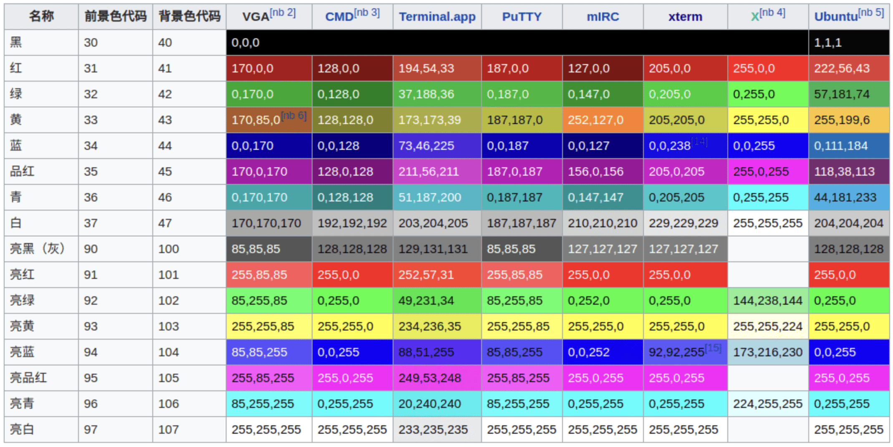
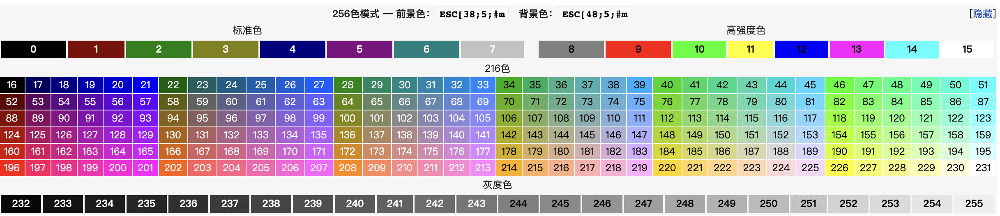

Linux: Linux基础入门和帮助
- TAGS: Linux
内容概述
- 用户
- Shell介绍
- 执行命令
- 简单命令
- Tab键补全
- 命令行历史
- bash快捷键
- 帮助用法
linux基础
用户类型
root 用户
一个特殊的管理帐户 也被称为超级用户 root已接近完整的系统控制 对系统损害几乎有无限的能力 除非必要,不要登录为 root
普通（ 非特权 ）用户
权限有限，造成损害的能力比较有限
终端 terminal
设备终端：键盘、鼠标、显示器
朋友们想象下，如果你面前没有键盘鼠标至少没有一个键盘和显示器的话，终端 对我们来讲或者我们打开这个命令提示符的可能性是否存在？
也就是说，用户想想跟计算机交互是不是需要一个交互界面？但是这个交互界面 如果没有工具程序或者没有硬件设备的话我们是否可以交互？
输入命令需要键盘，显示命令的结果需要显示器。所以如果没有键盘和显示器这 些都做不了。
任何的接口程序都应该是跟一组硬件相关。这组硬件设备至少包含一个键盘一个 显示器。而键盘加显示器的组合我们通常把它们叫做终端设备。
早期的系统是多任务和多用户的操作系统，那时的电脑都一些小型机，多个用户 使用主机前面多路复用一样的分屏器的一个插槽接口连接。
同一个电脑就要显示多个用户接口，每一个用户接口上都需要运行一个用户接口 程序，运行中的接口程序我们通常叫做进程，但是这个用户接口程序一定要跟硬 件设备结合起来。终端设备叫做terminal
终端类型
1) 物理终端pty，控制台console
物理终端只在linux启动过程中被直接使用，系统启动完后我们所看到的黑屏幕 不叫物理终端而是虚拟终端，他是软件模拟出来的。设备文件：/dev/console
2) 虚拟终端tty
tty：teletypewriters 用软件模拟出来的。可以有n个，
默认会启动6个虚拟终端，按住 Ctrl+Alt+F[1-6] 开启一个虚拟终端，同样方
法可以来回切换的。
设备文件：/dev/tty# #号是1到6的闭区间[1,6]
虚拟终端可以有n个，它是软件模拟出来的，
如，现在在虚拟终端上按住Ctrl+Alt+F3
3) 图形终端
图像化界面，但不是必须的，无需图形界面服务器不需要显卡
CentOS 6 ： Ctrl+Alt+F7
CentOS 7：在哪个虚拟终端启动，即位于哪个虚拟终端；
启动GUI：
第一次启动时，在虚拟终端接口运行命令: startx &
startx, xwindows
4) 串行终端ttyS
如果你电脑从来都用不到图形界面，我们就不需要显卡，主板上的串口基于特定 的速率交换字符就可以。你这种称为串行终端。
设备文件：/dev/ttyS#
5) 伪终端pts
通过远程的或者其它的显示器加键盘或者是通过桌面上模拟出来的一个显示器来 当作命令输出接口时，像这种叫伪终端。
设备文件：/dev/pts#
注意在启动设备后，在其上管理一个用户接口程序，即可实现与用户交互。
查看当前的终端设备 tty
tty 命令可以查看当前所在终端
选项
-s 没有任何输出，仅返回状态。0为有终端
范例：
tty [root@centos8 ~]#tty /dev/pts/0
交互式接口
交互式接口：启动终端后，在终端设备附加一个交互式应用程序
交互式接口类型
- GUI：Graphic User Interface
- X protocol, window manager, desktop
- Desktop:
- GNOME (C, 图形库gtk)，
- KDE (C++,图形库qt)
- XFCE (轻量级桌面)
- X protocol, window manager, desktop
CLI：Command Line Interface
shell程序
操作系统接口分2种：GUI、CLI
GUI：Graphic User Interface 图形用户界面
- GNome使用C语言研发的，研发环境gtk
- KDE是使用c++研发的，研发环境是qt
- XFACE：轻量，简洁，适用于嵌入式终端的桌面系统
CLI：Command Line Interface 命令行接口
纯粹的命令行界面 TUI：Text User Interface文本用户接口
实现：bash、zsh、sh、csh、tcsh、ksh、fish
什么是shell
Shell 是Linux系统的用户界面，提供了用户与内核进行交互操作的一种接口。 它接收用户输入的命令并把它送入内核去执行
shell也被称为LINUX的命令解释器（command interpreter），Shell 本身是一 个程序。将用户输入的命令行拆解为”命令名“与”参数“。接着，根据命令名 找到对应要执行的程序，对被执行的程序进行初始化，然后将刚才解析出来的参 数传给该程序并执行
shell是一种高级程序设计语言，提供了变量，函数，条件判断，循环等开发语 言的功能
由于Shell本身是个程序，所以它可以被任何用户自己开发的各种Shell所代替
各种Shell
- sh：Steve Bourne
- bash：Bourne-Again Shell，GPL，CentOS 和 Ubuntu 默认使用
- csh：c shell , C 语言风格
- tcsh
- ksh ：Korn Shell, AIX 默认 shell
- zsh： MacOS默认shell
bash shell
GNU Bourne-Again Shell(bash)是GNU计划中重要的工具软件之一，目前也是 Linux标准的shell，与 sh兼容
显示当前使用的shell
echo ${SHELL}
显示当前系统使用的所有shell
cat /etc/shells
远程连接方式：
通过ssh协议（secure shell） 查看ssh协议是否开启，输入命令 ~]# ss -tnl 查看系统是否监听于tcp协议的22号端口。 查看本机地址IP ~]# ip addr list ~]# ifconfig 测试网络连通性 ~]# ping 本机ip 确保闭关防火墙 centos6 ~]# iptables -L -n ~]# service stop iptables #关闭防火墙 ~]# chkconfig iptables off #确保以后不会启动 centos7 ~]# systemctl disable firewalld.service #确保开启不启动 ~]# systemctl stop firewalld.service #关闭防火墙
远程连接工具： 推荐使用xmanager 通过xshell连接也能输入用户命令
用户接口： 能输入命令的地方就是用户接口
设置主机名
hostname NAME # 临时修改，写在内存里下次登录就还原了 hostnamectl sethostname NAME # 永久生效，并将主机名写到/etc/hostname中，支持centos7和ubuntu18.04以上版本
注意：
- 主机名不支持使用下划线，但支持横线，可使用字母，横线或数字组合
- 有些软件对主机名有特殊要求
范例
hostnamectl hostname b100-ubuntu2024-01 bash # 进入bash中加载环境
命令提示符 prompt
登录Linux后，默认的系统命令提示符毫无没有个性，无法明显辨别生产和测试环境，而导致误操作。
可以通过修改PS1变量实现个性的提示符格式，避免这种低级错误
范例：默认的提示符
#CentOS默认提示符 [root@localhost ~]# #Ubuntu默认提示符 root@ubuntu1804:~#
#：命令提示符； 其中# 号管理员、$ 号普通用户 []是固定字符 root: 当登录的用户 @是固定符号 localhost: 当前主机的主机名，非完整格式；完整格式是FQDN，域名为node1.xxx.com ~：用户当前所在的目录(current directory)，也称为工作目录(working directory)；相对路径；
命令提示符有2种：
- #：管理员账号，为root; 拥有最高权限，能执行所有操作；
- $：普通用户，非root用户；不具有管理权限，不能执行系统管理类操作；
如，用root创建一个普通用户并切换过去，看命令提示符
注意：我们尽量使用非管理员用户登录，执行管理员操作时临时切换到管理员，操作完即退回。
显示提示符格式
[root@centos8 ~]#echo $PS1 \[\e[1;35m\][\u@\h \W]\$\[\e[0m\]
修改提示符格式范例
PS1="\[\e[1;5;41;33m\][\u@\h \W]\\$\[\e[0m\]" PS1='\[\e[1;32m\][\t \[\e[1;33m\]\u\[\e[35m\]@\h\[\e[1;31m\] \W\[\e[1;32m\]]\[\e[0m\]\$' POOL_NAME=`hostname` PS1_POOL=`echo ${POOL_NAME} | tr 'A-Z' 'a-z'` PS1_INT=`/sbin/ip a | egrep -v 'inet6|127.0.0.1|\/32' | awk -F'[ /]+' '/inet/{print $NF" = "$3}' | head -n1` PS1='[\e[1;32m\u\e[m\e[1;33m@\e[m'"\e[1;35m$PS1_POOL\e[m"' \e[4m\w\e[m] \e[1;36m$PS1_INT\e[m\n\$ '
提示符格式说明：
\e 控制符\033 \u 当前用户 \h 主机名简称 \H 主机名 \w 当前工作目录 \W 当前工作目录基名 \t 24小时时间格式 \T 12小时时间格式 ! 命令历史数 # 开机后命令历史数
ANSI转义序
\e ANSI转义序列使用了ECMA-48标准，用于控制视频文本终端上的光标位置、
颜色和其他选项。
https://zh.wikipedia.org/wiki/ANSI%E8%BD%AC%E4%B9%89%E5%BA%8F%E5%88%97
https://manpages.ubuntu.com/manpages/kinetic/zh_CN/man4/console_codes.4.html
https://www.ecma-international.org/publications-and-standards/standards/ecma-48/
范例：centos持久保存提示符格式相关变量 PS1
[root@centos8 ~]# echo 'PS1="\[\e[1;32m\][\t \[\e[1;33m\]\u\[\e[35m\]@\h\ [\e[1;31m\] \W\[\e[1;32m\]]\[\e[0m\]\\$"' > /etc/profile.d/env.sh [root@centos8 ~]#cat /etc/profile.d/env.sh PS1="\[\e[1;32m\][\t \[\e[1;33m\]\u\[\e[35m\]@\h\[\e[1;31m\] \W\[\e[1;32m\]]\ [\e[0m\]\\$" [root@centos8 ~]# exit [15:28:40 root@centos8 ~]#
范例：centos持久保存提示符格式相关变量 PS1
[root@ubuntu2004 ~]#echo "PS1='\[\e[1;35m\][\u@\h \W]\\$\[\e[0m\]'" >> .bashrc [root@ubuntu2004 ~]#tail -1 .bashrc PS1='\[\e[1;35m\][\u@\h \W]\$\[\e[0m\]
自定义命令提示符
表1: Shell 提示符中用到的转义字符
| 序列 | 显示值 |
|---|---|
| \a | 以 ASCII 格式编码的铃声 . 当遇到这个转义序列时，计算机会发出嗡嗡的响声。 |
| \d | 以日，月，天格式来表示当前日期。例如，“Mon May 26” |
| \h | 本地机的主机名，但不带末尾的域名。 |
| \H | 完整的主机名。 |
| \j | 运行在当前 shell 会话中的工作数。 |
| \l | 当前终端设备名。 |
| \n | 一个换行符。 |
| \r | 一个回车符。 |
| \s | shell 程序名。 |
| \t | 以24小时制，hours:minutes:seconds 的格式表示当前时间. |
| \T | 以12小时制表示当前时间。 |
| \@ | 以12小时制，AM/PM 格式来表示当前时间，例如“10:51 PM”。 |
| \A | 以24小时制，hours:minutes 格式表示当前时间。 |
| \u | 当前用户名。 |
| \v | shell 程序的版本号，例如4.3。 |
| \V | shell 程序的版本号，例如4.3.11。 |
| \w | 当前工作目录名。 |
| \W | 当前工作目录名的最后部分。 |
| \! | 当前命令的历史号。 |
| \# | 当前 shell 会话中的命令数。 |
| \$ | 这会显示一个"$"字符，除非你拥有超级用户权限。在那种情况下， 它会显示一个"#"字符。 |
| \[ | 标志着一系列一个或多个非打印字符的开始。这被用来嵌入非打印的控制字符，这些字符以某种方式来操作终端仿真器，比方说移动光标或者是更改文本颜色。 |
| \] | 标志着非打印字符序列结束。 |
例如我现在想让提示符显示格式为： <用户名>@<当前目录名> $ ，则
PS1="\u@\W\$ "
效果如下
上面能够满足我们的效果了，但是相对于LinuxMint原始的提示符，缺少了颜色， 不太美观。下面我们来学习如何添加颜色。大多数终端仿真器程序支持一定的非 打印字符序列来控制，比方说字符属性（像颜色，黑体和可怕的闪烁）和光标位 置。
2.字体颜色字体
颜色是由一个ANSI 转义编码来控制的。该控制编码会嵌入字符流中并发送给终 端仿真器。但是，该控制编码不会被“打印”到屏幕上，而是会被终端解释为一 个指令。
正如我们在上表看到的字符序列， 这个 \[ 和 \] 序列被用来封装这些非打印 字符。一个 ANSI 转义编码以一个八进制033（这个编码是由 退出按键产生的） 开头，其后跟着一个可选的字符属性（0：正常、1：黑体、4：下划线、5：闪烁、 7：反向（前景色和背景色反转）），在之后是一个指令。表14-2: 用转义序列 来设置文本颜色
| 序列 | 文本颜色 | 序列 | 文本颜色 | |
|---|---|---|---|---|
| \033[0;30m | 黑色 | \033[1;30m | 深灰色 | |
| \033[0;31m | 红色 | \033[1;31m | 浅红色 | |
| \033[0;32m | 绿色 | \033[1;32m | 浅绿色 | |
| \033[0;33m | 棕色 | \033[1;33m | 黄色 | |
| \033[0;34m | 蓝色 | \033[1;34m | 浅蓝色 | |
| \033[0;35m | 粉红 | \033[1;35m | 浅粉色 | |
| \033[0;36m | 青色 | \033[1;36m | 浅青色 | |
| \033[0;37m | 浅灰色 | \033[1;37m | 白色 |
PS: \033可用\e来代替
例如我们来设置一个同LinuxMint默认的绿色提示符，
PS1="\[\033[01;32m\]\u@\W\$\[\033[00m\] " 或 PS1='\e[01;32m\u@\W\n\$\e[0m'
于是，我们便有了下面的效果。
上面跟设置的提示符格式中的最后那个”[\033[00m]”是用于将后续的字符颜色 还原回原来的颜色。如果没有没有加最后这个转义码，则会出现下面结果（我们 自己手工输入的命令也都将是绿色的）。
3.背景颜色
除了字体颜色，我们也可以设置字体的背景颜色。同样是通过转义的控制编码来 实现，下表是背景颜色的控制编码。
表3: 用转义序列来设置背景颜色
| 序列 | 文本颜色 | 序列 | 文本颜色 |
|---|---|---|---|
| \033[0;40m | 黑色 | \033[1;44m | 蓝色 |
| \033[0;41m | 红色 | \033[1;45m | 粉红 |
| \033[0;42m | 绿色 | \033[1;46m | 青色 |
| \033[0;43m | 棕色 | \033[1;47m | 浅灰色 |
4.移动光标：
转义编码也可以用来定位光标。这些编码通常被用来，每次当提示符出现的时候， 会在屏幕的不同位置，比如说上面一个角落，显示一个时钟或者其它一些信息。 下表是一系列用来定位光标的转义编码：
表14-4: 光标移动转义序列
| 转义编码 | 行动 |
|---|---|
| \033[l;cH | 把光标移到第 l 行，第 c 列。 |
| \033[nA | 把光标向上移动 n 行。 |
| \033[nB | 把光标向下移动 n 行。 |
| \033[nC | 把光标向前移动 n 个字符。 |
| \033[nD | 把光标向后移动 n 个字符。 |
| \033[2J | 清空屏幕，把光标移到左上角（第零行，第零列）。 |
| \033[K | 清空从光标位置到当前行末的内容。 |
| \033[s | 存储当前光标位置。 |
| \033[u | 唤醒之前存储的光标位置。 |
5.保存提示符
我们在当前打开的Terminal中设置环境变量PS1的值来自定义的终端提示符，只 在当前Terminal中有效，打开新的Terminal就会采用系统默认的提示符了。我们 当让不希望每次打开Terminal的时候都要重新设置一次SP1环境变量。
~/.bashrc 文件会在每次打开一个Terminal之前会被执行一次。于是，我们可
以将设置环境变量SP1的命令放到该文件中，便不需要每次都手工再设置一次SP1
的值。于是，我们在 ~/.bashrc 配置文件末尾加入下面两行内容，
PS1="\[\033[01;32m\]\u@\W\$\[\033[00m\] " export PS1
于是，每次打开Terminal便都会有如下提示符效果，
6.示例
1）格式： <用户名>@<当前目录名>$
PS1="\u@\W\$ "
效果如下：
2）添加下划线：
PS1="\[\033[4;37m\]\u@\W\$\[\033[00m\] "
效果如下：
3）前景色为绿色：
PS1="\[\033[0;32m\]\u@\W\$\[\033[00m\] "
效果如下：
4）前景色为绿色，背景色为红色：
PS1="\[\033[0;41m\033[1;32m\]\u@\W\$\[\033[00m\] "
效果如下：
5）设置一个超级复杂的，通过移动光标来设置一个每次显示提示符的时候都在 当前Terminal的第一行显示当前时间。
PS1='\[\033[s\033[0;0H\033[0;41m\033[K\033[1;33m\t\033[0m\033[u\033[1;32m\]\u@\W\$ \[\033[00m\] '
效果如下：
参考： http://billie66.github.io/TLCL/book/chap14.html
生产
PS1="[\033[1;32m\]\u@\H \w\[\033[0m]\n\\$ "
cat >/etc/profile.d/ipenv.sh<<\EOF POOL_NAME=`hostname` PS1_POOL=`echo ${POOL_NAME} | tr 'A-Z' 'a-z'` PS1_INT=`/sbin/ip a | egrep -v 'inet6|127.0.0.1|\/32' | awk -F'[ /]+' '/inet/{print $NF" = "$3}' | head -n1` export PS1='[\e[1;32m\u\e[m\e[1;33m@\e[m'"\e[1;35m$PS1_POOL\e[m"' \e[4m\w\e[m] \e[1;36m$PS1_INT\e[m\n\$ ' HISTFILESIZE=4000 HISTSIZE=4000 USER_IP=`who -u am i 2>/dev/null| awk '{print $NF}'|sed -e 's/[()]//g'` if [ -z $USER_IP ] then USER_IP=`hostname` fi HISTTIMEFORMAT="%F %T $USER_IP:`whoami` " export HISTTIMEFORMAT #export HISTTIMEFORMAT="%Y-%m-%d:%H-%M-%S:`whoami`: " alias vi=vim export EDITOR=vim EOF source /etc/profile
cat << \EOF > /etc/profile.d/ipenv.sh POOL_NAME=`hostname` PS1_POOL=`echo ${POOL_NAME} | tr 'A-Z' 'a-z'` PS1_INT=`/sbin/ip a | egrep -v 'inet6|127.0.0.1|\/32' | awk -F'[ /]+' '/inet/{print $NF" = "$3}' | head -n1` export PS1='[\e[1;32m\u\e[m\e[1;33m@\e[m'"\e[1;35m$PS1_POOL\e[m"' \e[4m\w\e[m] \e[1;36m$PS1_INT\e[m\n\$ ' export HISTTIMEFORMAT="%Y-%m-%d:%H-%M-%S:`whoami`: " alias vi=vim export EDITOR=vim EOF source /etc/profile
执行命令
执行命令过程
输入命令后回车，提请shell程序找到键入命令所对应的可执行程序或代码，并 由其分析后提交给内核分配资源将其运行起来
shell中可执行的两类命令
- 内部命令：由shell自带的，而且通过某命令形式提供
- 一连上终端，在这个终端中bash就已经运行起来了，bash是一个接口程序，同时也是一个工具集，里面有很多命令。这些命令就叫内部命令。
- 外部命令：在文件系统路径下有对应的可执行程序文件
区别指定的命令是内部或外部命令
type COMMAND type ls #区分是内部还是外部命令 type -t echo #简写，只给出类型，builtin|alias|file|keyword type -a echo #列出所有，有可能是内部命令，也同时会是外部命令 bash -c help #查看bash中所有内容(不仅仅是内部命令) help #查看bash中所有内容(不仅仅是内部命令) enable #查看bash中所有内置命令 help echo #查看内部命令帮助
范例: 查看是否存在对应内部和外部命令
[root@centos8 ~]#type -a echo echo is a shell builtin echo is /usr/bin/echo
有内部命令，又有外部命令，因为不是所有主机都使用标准shell，所以常用内部命令有一个外部命令的备份，防止内部命令执行失败。
在命令执行时，shell先判断是否是内部命令，如果是，则执行内部命令，如果不是，则去特定目录下寻找外部命令。
bash shell 自身就是一个程序，里面有很多小工具，有用户通过终端连接主机，则该终端就有一个bash在后台运行着。
内部命令相关
help #内部命令列表 enable #管理内部命令 enable cmd #启用内部命令 enable –n cmd #禁用内部命令 enable –n #查看所有禁用的内部命令
内置命令参考：
# enable (1). : 执行当前进程环境中的程序。同source。 (2). file : dot命令从文件file中读取命令并执行。 (3): : 单个冒号为空操作，返回退出状态0。 (4)alias : 显示和创建已有命令的别名。 (5)bg : 把作业放到后台。 (6)declare [var] : 显示所有变量，或用可选属性声明变量。 (7)dirs : 显示当前记录的目录（pushd的结果）。 (8)disown : 从作业表中删除一个活动作业。 (9)echo [args] : 显示args并换行。 (10)enable : 启用或禁用Shell内置的命令。 (11)bind : 显示当前关键字与函数的绑定情况，或将关键字与readline函数或宏进行绑定。 (12)break : 从最内层循环跳出。 (13)builtin [sh-builtin [args]] : 运行一个内置Shell命令，并传送参数，返回退出状态0。当一个函数与一个内置命令同名 时，该命令将很有用。 (14)cd [arg] : 改变目录，如果不带参数，则回到主目录，带参数则切换到参数所指的目录。 (15)command comand [arg] : 即使有同名函数，仍然执行该命令。也就是说，跳过函数查找。 (16)eval [args] : 把args读入Shell，并执行产生的命令。 (17)exec command：运行命令，替换掉当前Shell。 (18)exit [n] : 以状态n退出Shell。 (19)export [var] : 使变量可被子Shell识别。 (20)help [command] : 显示关于内置命令的有用信息。如果指定了一个命令，则将显示该命令的详细信息。 (21)history : 显示带行号的命令历史列表。 (22)jobs : 显示放到后台的作业。 (23)kill [-signal process] : 向由PID号或作业号指定的进程发送信号。输入kill-l查看信号列表。 (24)let : 用来计算算术表达式的值，并把算术运算的结果赋给变量。 (25)local : 用在函数中，把变量的作用域限制在函数内部。 (26)fg : 把后台作业放到前台。 (27)getopts : 解析并处理命令行选项。 (28)hash : 控制用于加速命令查找的内部哈希表。 (29)logout : 退出登录Shell。 (30)popd : 从目录栈中删除项。 (31)pushd : 向目录栈中增加项。 (32)pwd : 打印出当前的工作目录。 (33)read [var] : 从标准输入读取一行，保存到变量var中。 (34)readonly [var] : 将变量var设为只读，不允许重置该变量。 (35)return [n] : 从函数中退出，n是指定给return命令的退出状态值。 (36)set : 设置选项和位置参量。 (37)shift [n] : 将位置参量左移n次。 (38)stop pid : 暂停第pid号进程的运行。 (39)suspend : 终止当前Shell的运行（对登录Shell无效）。 (40)test : 检查文件类型，并计算条件表达式。 (41)times : 显示由当前Shell启动的进程运行所累计用户时间和系统时间。 (42)trap [arg] [n] : 当Shell收到信号n（n为0、1、2或15）时，执行arg。 (43)type [command] : 显示命令的类型，例如：pwd是Shell的一个内置命令。 (44)typeset : 同declare。设置变量并赋予其属性。 (45)ulimit : 显示或设置进程可用资源的最大限额。 (46)umask [八进制数字] : 用户文件关于属主、属组和其他用户的创建模式掩码。 (47)unalias : 取消所有的命令别名设置。 (48)unset [name] : 取消指定变量的值或函数的定义。 (49)wait [pid#n] : 等待pid号为n的后台进程结束，并报告它的结束状态。
执行外部命令 与hash缓存表
查看外部命令路径：
which -a |--skip-alias
whereis
范例：
which ls #跳过别名 which --skip-alias ls # -a 表示在所有路径中查找匹配的命令 jasper@debian:~$ which -a echo /usr/bin/echo /bin/echo #查看path echo $PATH
Hash缓存表 系统初始hash表为空，当外部命令执行时，默认会从PATH路径下寻找该命令，找到后会将这条命令的路径记录到hash表中，当再次使用该命令时，shell解释器首先会查看hash表，存在将执行之，如果不存在，将会去PATH路径下寻找，利用hash缓存表可大大提高命令的调用速率
hash 命令常见用法
hash # 显示hash缓存 hash -l # 显示hash缓存，可作为输入使用 hash -p path name #将命令全路径path起别名为name hash -t name #打印缓存中name的路径 hash -d name #清除name缓存 hash -r #清除缓存
命令别名 alias
对于经常执行的较长的命令，可以将其定义成较短的别名，以方便执行 显示当前shell进程所有可用的命令别名 。 注意别名在脚本中无效
alias #显示当前shell进程所有可用的命令别名 alias name #查看指定别名 alias NAME='VALUE' #定义别名NAME，其相当于执行命令VALUE unalias #撤消别名 unalias [-a] name [name ...] unalias -a #取消所有别名
注意：在命令行中定义的别名，仅对当前shell进程有效
范例:
#列出所有别名 alias alias ls='ls -l --color=auto' alias ll='ls -alF' #定义别名scandisk，扫描新加的磁盘 [root@centos8 ~]#alias scandisk='echo - - - >/sys/class/scsi_host/host0/scan;echo - - - >/sys/class/scsi_host/host1/scan;echo - - - > /sys/class/scsi_host/host2/scan' #撤销别名 unalias scandisk #持久保存别名 echo "alias free='free -h'" >> .bashrc
如果想永久有效，要定义在配置文件中
- 仅对当前用户： ~/.bashrc
- 对所有用户有效：/etc/bashrc
编辑配置给出的新配置不会立即生效，bash进程重新读取配置文件
source /path/to/config_file
. /path/to/config_file
如果别名同原命令同名，如果要执行原命令，可使用
\ALIASNAME “ALIASNAME” 'ALIASNAME' command ALIASNAME /path/commmand #只适用于外部命令
范例： 使用原生命令
\ls "ls" 'ls' command ls /usr/bin/ls
命令格式
我们知道任何的人机交互接口都应该关联到一个终端设备上，而后在终端设备上 显示命令提示符来，在命令提示符下就可以键入命令。但是每一个命令它的大体 运行格式几乎都是相似的。
通用格式
COMMAND [OPTIONS...] [ARGUMENTS...] COMMAND #命令 [OPTIONS...] #选项，用于启动关闭命令的某个或某些功能 [ARGUMENTS...] #参数，命令作用对象，比如:文件名，用户名等 [] #表示里面的内容是可选的。也就是说，一条命令的选项和参数是可以都没有的 ... #表示可以有多个值。也就是说，一条命令，可以有多个选项，或多个参数
选项：
- 短选项：UNIX 风格选项，-c 例如：-l, -h
- 长选项：GNU风格选项，–word 例如：–all, –human
- BSD风格选项： 一个字母，例如：a，使用相对较少
范例:
[root@centos8 ~]#id -u wang 1000 [root@centos8 ~]#ls -a [root@centos8 ~]#ls --all [root@centos8 ~]#free -h #短选项 [root@centos8 ~]#free --human #长选项 [root@centos8 ~]#ps a #BSD风格选项
注意：
- 多个选项以及多参数和命令之间使用空白字符分隔
- 多个短选项可以写在一起，如ls -alF，但多点长选项不可以写在一起，拆不过来。
- 取消和结束命令执行：Ctrl+c，Ctrl+d
- 多个命令可以用 ";" 符号分开
- 一个命令可以用 \ 反斜杠分成多行
COMMAND
发起一个命令：请求内核将某个二进制程序运行为一个进程。
程序 –>进程
静态 –>动态（有生命周期）
命令命令本身是一个可执行的程序文件：
二进制格式的文件，有可能会调用共享库
多数系统程序文件都存放在: 系统自带的/bin,/sbin,/usr/bin,/usr/sbin, 非系统自带的/usr/local/sbin, /usr/local/bin 普通命令：/bin, /usr/bin, /usr/local/bin 管理命令：/sbin, /usr/sbin, /usr/local/sbin 共享库：/lib, /lib64, /usr/lib, /usr/lib64, /usr/local/lib, /usr/local/lib64 32位库文件：/lib,/usr/lib,/usr/local/lib 64位库文件：/lib64,/usr/lib64,/usr/local/lib64
注意：并非所有的命令都有一个在某目录与之对应的可执行程序文件，像cd命令。
命令必须遵循特定格式规范
- Windows格式: exe,msi,
- Linux格式: ELF–>Executable and Linkable Format可执行链接文件
[root@node01 ~]# file /bin/ls
/bin/ls: ELF 64-bit LSB executable, x86-64, version 1 (SYSV), dynamically linked (uses shared libs), for GNU/Linux 2.6.32, BuildID[sha1]=3d705971a4c4544545cb78fd890d27bf792af6d4, stripped
命令分为两类
内置命令(builtin)：由shell程序自带命令，像cd
外部命令:独立可执行程序文件，文件名即命令名
为什么输入ls系统能找到ls在的位置并执行？
shell程序是独特的程序，负责解析用户提供的命令(包括词法分析语法分析句法 分析等)，他们通过自己的环境变量来定义工作特性。按照空格切割输入的内容
环境变量：
PATH:从哪些路径中查找用户键入的命令字符串所对应的命令文件；
查找次序：自左而右，找到了命令就不往下找了。
查看PATH的环境变量
[root@node01 ~]# echo $PATH
/usr/local/sbin:/usr/local/bin:/usr/sbin:/usr/bin:/root/bin
查看命令类型：
type COMMAND
把PATH变量去除了只能找到内置命令了，但写入绝对路径也可以找到外部命令。
[root@node01 ~]# type ls #外部命令 ls is aliased to `ls --color=auto' [root@node01 ~]# type type #内置命令 type is a shell builtin
OPTIONS：
OPTIONS的主要作用
指定命令的运行特性： 配置文件也是指定命令的运行特性的
选项有两种表现形式：
短选项： -后加一个单个字符，-C ,如-l ,-d
注意：有些命令的选项没有-。如果同一个命令同时使用多个短选项，多个数可 合并，如-ld
短选项使用空格来分隔
长选项： –word,如：–help,–human-readable
注意：长选项不能合并。
长选项使用等号来等于
有些选项可以带参数，此称为选项参数
ARGUMENTS:
命令的作用对象：命令对什么生效？？？？
注意：不同的命令参数：有些命令同时可带多个参数，多个之间以空白分开
如：ls -ld /var /usr
命令里套子命令
centos7后的命令开始大量使用子命令
常见命令
查看硬件信息
查看cpu
lscpu命令可以查看cpu信息
cat /proc/cpuinfo也可看查看到
范例：
[root@centos8 ~]# lscpu Architecture: x86_64 CPU op-mode(s): 32-bit, 64-bit Byte Order: Little Endian CPU(s): 8 On-line CPU(s) list: 0-7 Thread(s) per core: 1 #每个core 有几个线程 Core(s) per socket: 4 #每个槽位有4个core Socket(s): 2 #服务器面板上有2个cpu 槽位 NUMA node(s): 2 #nodes的数量 Vendor ID: GenuineIntel CPU family: 6 Model: 44 Stepping: 2 CPU MHz: 2128.025 BogoMIPS: 4256.03 Virtualization: VT-x L1d cache: 32K L1i cache: 32K L2 cache: 256K L3 cache: 8192K NUMA node0 CPU(s): 0,2,4,6 #对应的core NUMA node1 CPU(s): 1,3,5,7 [root@centos8 ~]# cat /proc/cpuinfo # nproc命令 # 查看cpu个数 ~]# nproc 16
查看内存大小
jasper@debian:~$ lsmem
RANGE SIZE STATE REMOVABLE BLOCK
0x0000000000000000-0x000000007fffffff 2G online yes 0-15
Memory block size: 128M
Total online memory: 2G
Total offline memory: 0B
[root@centos8 ~]#free
total used free shared buff/cache available
Mem: 816188 156888 412660 5792 246640 527024
Swap: 2097148 0 2097148
[root@centos8 ~]#cat /proc/meminfo
MemTotal: 816188 kB
MemFree: 412780 kB
MemAvailable: 527144 kB
Buffers: 5304 kB
Cached: 208252 kB
......
free命令补充
#1秒刷新一次数据 free -hs 1 #刷新2次数据后退出 free -hc 2 total #系统总内存大小 used #已使用物理内存大小 free #还有多少物理内存可用 share #补共享使用的物理内存大小 buff/cache #被buffer和cache使用的物理内存大小 available #还可以被应用程序使用的物理内存大小 #free 是真正尚未被使用的物理内存大小 #available 是应用程序认为可用内存数量
查看硬盘和分区情况
[root@centos8 ~]#lsblk NAME MAJ:MIN RM SIZE RO TYPE MOUNTPOINT sda 8:0 0 200G 0 disk ├─sda1 8:1 0 1G 0 part /boot ├─sda2 8:2 0 100G 0 part / ├─sda3 8:3 0 50G 0 part /data ├─sda4 8:4 0 1K 0 part └─sda5 8:5 0 2G 0 part [SWAP] sr0 11:0 1 7G 0 rom [root@centos8 ~]#cat /proc/partitions major minor #blocks name 8 0 209715200 sda 8 1 1048576 sda1 8 2 104857600 sda2 8 3 52428800 sda3 8 4 1 sda4 8 5 2097152 sda5 11 0 7377920 sr
查看 cpu 架构
$ arch
- x86_64： amd 架构
- aarch64: arm 架构
范例：确定当前系统是32位或64位
[root@centos8 ~]#getconf LONG_BIT 64 [root@rhel5 ~]# getconf LONG_BIT 32
查看系统版本信息
查看内核版本
cat /proc/version uname -a uname -mrs rpm -q kernel dmesg | grep Linux ls /boot | grep vmlinuz-
范例
[root@centos8 ~]#uname -r 4.18.0-147.el8.x86_64 [root@centos7 ~]#uname -r 3.10.0-1062.el7.x86_64 [root@centos6 ~]# uname -r 2.6.32-754.el6.x86_64 [root@ubuntu1804 ~]#uname -r 4.15.0-29-generic [root@jump prometheus]# uname -mrs Linux 6.1.140-154.222.amzn2023.aarch64 aarch64 [root@jump prometheus]# cat /proc/version Linux version 6.1.140-154.222.amzn2023.aarch64 (mockbuild@ip-10-0-37-20) (gcc (GCC) 11.5.0 20240719 (Red Hat 11.5.0-5), GNU ld version 2.41-50.amzn2023.0.3) #1 SMP Mon Jun 2 15:10:54 UTC 2025
查看操作系统发行版本
#CentOS8 查看发行版本 [root@centos8 ~]#cat /etc/redhat-release CentOS Linux release 8.1.1911 (Core) [root@centos8 ~]#cat /etc/os-release NAME="CentOS Linux" VERSION="8 (Core)" ID="centos" ID_LIKE="rhel fedora" VERSION_ID="8" PLATFORM_ID="platform:el8" PRETTY_NAME="CentOS Linux 8 (Core)" ANSI_COLOR="0;31" CPE_NAME="cpe:/o:centos:centos:8" HOME_URL="https://www.centos.org/" BUG_REPORT_URL="https://bugs.centos.org/" # yum provides lsb_release redhat-lsb-core-4.1-27.el7.centos.1.i686 : LSB Core module support Repo : base Matched from: Filename : /usr/bin/lsb_release [root@centos7 ~] eth0 = 10.0.1.86 # yum install redhat-lsb-core -y [root@centos8 ~]#lsb_release -a LSB Version: :core-4.1-amd64:core-4.1-noarch Distributor ID: CentOS Description: CentOS Linux release 8.1.1911 (Core) Release: 8.1.1911 Codename: Core [root@centos8 ~]# #ubuntu查看发行版本 [root@ubuntu1804 ~]#cat /etc/os-release NAME="Ubuntu" VERSION="18.04.1 LTS (Bionic Beaver)" ID=ubuntu ID_LIKE=debian PRETTY_NAME="Ubuntu 18.04.1 LTS" VERSION_ID="18.04" HOME_URL="https://www.ubuntu.com/" SUPPORT_URL="https://help.ubuntu.com/" BUG_REPORT_URL="https://bugs.launchpad.net/ubuntu/" PRIVACY_POLICY_URL="https://www.ubuntu.com/legal/terms-and-policies/privacy- policy" VERSION_CODENAME=bionic UBUNTU_CODENAME=bionic [root@ubuntu1804 ~]#cat /etc/issue Ubuntu 18.04.1 LTS \n \l [root@ubuntu1804 ~]#lsb_release -a No LSB modules are available. Distributor ID: Ubuntu Description: Ubuntu 18.04.1 LTS Release: 18.04 Codename: bionic [root@ubuntu1804 ~]#
日期和时间
Linux：系统启动时从硬件读取日期和时间信息；读取完了以后，就不再与硬件 相关联，然后就跟内核频率有关。
靠内核时钟来维护时钟，内核频率，比如内核频率是100Hz表示内核震动100次走1秒。
linux的两种时钟：
- 系统时钟：由Linux内核通过CPU的工作频率进行的
- 硬件时钟：主板
系统时钟命令：date
date [OPTION]... [+FORMAT] #显示系统日期 date [-u|--utc|--universal] [MMDDhhmm[[CC]YY][.ss]] #设置系统时间
命令选项:
-d<字符串> 显示字符串所指的日期与时间。字符串前后必须加上双引号。 -s<字符串> 根据字符串来设置日期与时间。字符串前后必须加上双引号。 -u 显示GMT。 --help 在线帮助。 --version 显示版本信息
1 显示系统日期时间：date [OPTION]… [+FORMAT]
FORMAT：格式符
%n : 在显示时，插入新的一行 %t : 在显示时，插入tab %H : 小时(00..23) %I : 小时(01..12) %k : 小时(0..23) %l : 小时(1..12) %M : 分钟(00..59) %p : 显示本地 AM 或 PM %r : 直接显示时间 (12 小时制，格式为 hh:mm:ss [AP]M) %s : 从 1970 年 1 月 1 日 00:00:00 UTC 到目前为止的秒数 %S : 秒(00..61) %T : 直接显示时间 (24 小时制) %X : 相当于 %H:%M:%S %Z : 显示时区 %a : 星期几 (Sun..Sat) %a : 星期的缩写 %A : 星期几 (Sunday..Saturday) %b : 月份 (Jan..Dec) %B : 月份 (January..December) %c : 直接显示日期与时间 %d : 日 (01..31) %D : 直接显示日期 (mm/dd/yy) %h : 同 %b %j : 一年中的第几天 (001..366) %m : 月份 (01..12) %U : 一年中的第几周 (00..53) (以 Sunday 为一周的第一天的情形) %w : 一周中的第几天 (0..6) %W : 一年中的第几周 (00..53) (以 Monday 为一周的第一天的情形) %x : 直接显示日期 (mm/dd/yy) %y : 年份的最后两位数字 (00.99) %Y : 完整年份 (0000..9999) %F：年月日
#使用空白字符分隔的话，+号后面跟引号表示是同一个字符串 date +"%F %T" date +%F-%T #显示年月日几点几分几秒： date +%Y-%m-%d-%H_%M_%S date +%s #自1970-1-1到当前的时间戳
范例
jasper@debian:~$ date Wed Sep 4 03:59:48 PM CST 2024 # -R 显示时区 jasper@debian:~$ date -R Wed, 04 Sep 2024 15:59:42 +0800 #时间戳 jasper@debian:~$ date +%s 1725437062 jasper@debian:~$ date -d @`date +%s` Wed Sep 4 04:05:13 PM CST 2024 jasper@debian:~$ date -d @1725437062 Wed Sep 4 04:04:22 PM CST 2024 jasper@debian:~$ date +%F 2024-09-04 jasper@debian:~$ date +%"F %T" 2024-09-04 16:08:37 jasper@debian:~$ date +"%F %T" 2024-09-04 16:08:50 jasper@debian:~$ date Wed Sep 4 04:09:13 PM CST 2024 jasper@debian:~$ date +%Y-%m-%d_%H:%M:%S 2024-09-04_16:11:30 [root@centos8 ~]#date -d @1584689051 Fri Mar 20 15:24:11 CST 2020 [root@centos8 ~]#date -d @1584689051 +%F_%T 2020-03-20_15:24:11 [root@ubuntu ~]#date -d "2020-02-02" +%s 1580572800
2 设定系统日期时间：date [MMDDhhmm[[CC]YY][.ss]]
月日小时分钟[[2位年]4位年][.秒]
如，2013年10月10日8点8分8秒 [root@node01 ~]# date 101008082013.08 Thu Oct 10 08:08:08 CST 2013 如，2015年12月8日18点15分23秒 [root@node01 ~]# date 1208181515.23 Tue Dec 8 18:15:23 CST 2015
在设定时间方面：
date -s //设置当前时间，只有root权限才能设置，其他只能查看。 date -s 20080523 //设置成20080523，这样会把具体时间设置成空00:00:00 date -s 01:01:01 //设置具体时间，不会对日期做更改 date -s “01:01:01 2008-05-23″ //这样可以设置全部时间 date -s “01:01:01 20080523″ //这样可以设置全部时间 date -s “2008-05-23 01:01:01″ //这样可以设置全部时间 date -s “20080523 01:01:01″ //这样可以设置全部时间 # 修改日期时间： timedatectl set-time "2017-01-23 10:30:00"（可以只修改其中一个）
加减：
date +%Y%m%d //显示前天年月日 date +%Y%m%d --date="+1 day" //显示前一天的日期 date +%Y%m%d --date="-1 day" //显示后一天的日期 date +%Y%m%d --date="-1 month" //显示上一月的日期 date +%Y%m%d --date="+1 month" //显示下一月的日期 date +%Y%m%d --date="-1 year" //显示前一年的日期 date +%Y%m%d --date="+1 year" //显示下一年的日期
date 命令的另一个扩展是 -d
选项，该选项非常有用。使用这个功能强大的选项，通过将日期作为引号括起来 的参数提供，您可以快速地查明一个特定的日期。
-d 选项还可以告诉您，相对 于当前日期若干天的究竟是哪一天，从现在开始的若干天或若干星期以后，或者 以前（过去）。
通过将这个相对偏移使用引号括起来，作为 -d 选项的参数，就 可以完成这项任务。 具体说明如下：
date -d "nov 22" 今年的 11 月 22 日是星期三 date -d '2 weeks' 2周后的日期 date -d 'next monday' (下周一的日期) date -d next-day +%Y%m%d（明天的日期）或者：date -d tomorrow +%Y%m%d date -d last-day +%Y%m%d(昨天的日期) 或者：date -d yesterday +%Y%m%d date -d last-month +%Y%m(上个月是几月) date -d next-month +%Y%m(下个月是几月) #使用 ago 指令，您可以得到过去的日期： date -d '30 days ago' （30天前的日期） #使用负数以得到相反的日期： date -d 'dec 14 -2 weeks' （相对:dec 14这个日期的两周前的日期） date -d '-100 days' (100天以前的日期) date -d '50 days'(50天后的日期)
3 时间戳和标准时间的互转
下面介绍几种时间戳格式和标准时间格式转换的方法：
1、分别以标准格式和时间戳来显示当前时间 [root@365linux ~]# date 2010年 08月 10日 星期二 03:39:21 CST [root@365linux ~]# date +%s 1281382775 2、显示指定时间的时间戳 [root@365linux ~]# date -d "2010-07-20 10:25:30" +%s 1279592730 3、将时间戳转换为标准时间格式 方法1：使用date命令 [root@365linux ~]# date -d "@1279592730" 2010年 07月 20日 星期二 10:25:30 CST [root@365linux ~]# date -d "1970-01-01 utc 1279592730 seconds" 2010年 07月 20日 星期二 10:25:30 CST [root@365linux ~]# date -d "1970-01-01 14781 days" "+%Y/%m/%d %H:%M:%S" 2010/06/21 00:00:00 [root@localhost tmp]# date -d "@1279592730" Tue Jul 20 10:25:30 CST 2010 [root@localhost tmp]# date -d "@1279592730" +"%Y%m%d %H:%M:%S" 20100720 10:25:30 [root@localhost tmp]# date -d "@1279592730" +"%F %H:%M:%S" 2010-07-20 10:25:30 [root@localhost tmp]# date -d "1970-01-01 utc 1279592730 seconds" Tue Jul 20 10:25:30 CST 2010 [root@localhost tmp]# date -d "1970-01-01 utc 1279592730 seconds" +"%F %H:%M:%S" 2010-07-20 10:25:30 [root@rabbitmq01 sh]# date -d "1970-01-01 1279592730 sec utc" +"%F %H:%M:%S" 2010-07-20 10:25:30 方法2：使用awk里的时间函数 [root@365linux ~]# echo "1279592730" |awk '{print strftime ("%F %T",$0)}' 2010-07-20 10:25:30 方法3：使用perl处理 [root@365linux ~]# perl -e 'print localtime(1279592730)."\n";' Tue Jul 20 10:25:30 2010 4. utc时间转换为cst时间 # 设置时区为上海（北京时间） TZ='Asia/Shanghai' date # 或者使用简写 TZ='CST-8' date # 直接计算北京时间（UTC+8） date -d '+8 hours' '+%Y-%m-%d %H:%M:%S %z' # 或者更详细的格式 date -d '+8 hours' '+%A, %B %d, %Y %H:%M:%S (GMT+8)' #印度时间转换为北京时间 (TZ=Asia/Shanghai date --date="TZ=\"Asia/Kolkata\" 2023-05-23 02:42:04" +"%Y-%m-%d %H:%M:%S %Z") # (TZ=Asia/Shanghai date --date="TZ=\"Asia/Kolkata\" 2023-05-23 02:42:04" +"%Y-%m-%d %H:%M:%S %Z") 2023-05-23 05:12:04 CST # (TZ=UTC date --date="TZ=\"Asia/Shanghai\" 2023-05-23 06:30:00" +"%Y-%m-%d %H:%M:%S %Z") 2023-05-22 22:30:00 UTC
关于时间格式的解释
- UTC (Universal Time Coordinated,UTC)世界协调时间
- CST (China Standard Time UTC+8:00)中国沿海时间(北京时间)
- GMT (Greenwich Mean Time)格林威治标准时间：
[root@365linux ~]# vim /etc/sysconfig/clock ZONE="Asia/Shanghai" UTC=true ARC=false [root@365linux ~]# cp /usr/share/zoneinfo/Asia/Shanghai /etc/localtime
oracle 中将unix/linux时间戳进行转换
unix/linux时间戳是按照从格林威治时间1970年1月1日期计算的一个秒数。
unix/linux时间戳转换为标准时间格式（主要是注意时区问题）：
select TO_DATE('19700101','yyyymmdd') + 1235728935/86400 +TO_NUMBER(SUBSTR(TZ_OFFSET(sessiontimezone),1,3))/24 from dual
其中1235728935就是unix/linux时间戳，转换完之后就表示为 2009-2-27 18:02:15。反过来也一样，还是要考虑时区:
select (to_date('2009-2-27 18:02:15','yyyy-mm-dd hh24:mi:ss') - to_date('1970-1-1','yyyy-mm-dd'))*86400- TO_NUMBER(SUBSTR(TZ_OFFSET(sessiontimezone),1,3))*3600 from dual
硬件时钟 clock、hwclock
显示或设定硬件时钟
clock [function] [option...] hwclock [function] [option...] #常用选项 -s,--hctosys #以硬件时钟为准，把系统调整为与硬件时间相同 -w,--systohc #以系统为准，把硬件时间调整为与系统时钟相同
显示硬件时钟：
使用hwclock命令显示硬件时间，这里跟时区相关，这里显示UTC时间
[root@node01 ~]# hwclock Thu 04 Jan 2018 11:38:40 PM CST -0.364600 seconds [root@centos8 ~]#ll /usr/sbin/clock lrwxrwxrwx. 1 root root 7 Apr 24 2020 /usr/sbin/clock -> hwclock
设定硬件时钟:
#使用hwclock -s 以硬件为准 [root@node01 ~]# hwclock Thu 04 Jan 2018 11:38:40 PM CST -0.364600 seconds [root@node01 ~]# hwclock -w [root@node01 ~]# date Tue Dec 8 18:26:27 CST 2015 [root@node01 ~]# hwclock Tue 08 Dec 2015 06:26:33 PM CST -0.647028 seconds #作用hwclock -w以系统时间为准 ~]# hwclock -w
时区
/etc/localtime
范例
timedatectl # 查看日期时间、时区及NTP状态： [root@centos8 ~]#timedatectl #等同于timedatectl status Local time: Mon 2020-07-27 17:20:56 CST Universal time: Mon 2020-07-27 09:20:56 UTC RTC time: Mon 2020-07-27 09:20:56 Time zone: Asia/Shanghai (CST, +0800) System clock synchronized: yes NTP service: active RTC in local TZ: no #列出所有时区 [root@centos8 ~]#timedatectl list-timezones #修改时区 timedatectl set-timezone Asia/Shanghai # 修改时区 chronyc -a makestep # 设置完时区后，强制同步下系统时钟： #检查时区 [root@centos8 ~]#ll /etc/localtime lrwxrwxrwx. 1 root root 35 Dec 11 11:19 /etc/localtime -> ../usr/share/zoneinfo/Asia/Shanghai root@ubuntu1804:~# cat /etc/timezone Asia/Shanghai
关于时间格式的解释
- UTC (Universal Time Coordinated,UTC)世界协调时间
- CST (China Standard Time UTC+8:00)中国沿海时间(北京时间)
- GMT (Greenwich Mean Time)格林威治标准时间：
系统时区设置：
[root@365linux ~]# vim /etc/sysconfig/clock ZONE="Asia/Shanghai" UTC=true ARC=false ln -sf /usr/share/zoneinfo/Asia/Kolkata /etc/localtime echo 'Asia/Kolkata' > /etc/timezone
cal：日历
cal [[month] year]
显示日历: cal -y
[root@node01 ~]# cal
January 2018
Su Mo Tu We Th Fr Sa
1 2 3 4 5 6
7 8 9 10 11 12 13
14 15 16 17 18 19 20
21 22 23 24 25 26 27
28 29 30 31
#1752年9月，按古历法计算时间与农历节欺对不上了，所以罗马教皇调了一下时间
[16:47:36 root@centos8 ~]#cal 9 1752
September 1752
Su Mo Tu We Th Fr Sa
1 2 14 15 16
17 18 19 20 21 22 23
24 25 26 27 28 29 30
关机和重启
关机：
halt poweroff init 0 shutdown -h now
重启：
reboot init 6 shutdown -r now #ctrl+alt+delete 键
reboot命令
-f: 强制，不调用shutdown -p: 切断电源
shutdown：关机或重启
shutdown程序会广播已登录的用户，被看作是案例的关机命令。是一个计划关机任务，可撤销
shutdown [OPTIONS...] [TIME] [WALL...] OPTION: -h：halt 关机 -r：reboot 重启 -c：cancel取消关机或重启 -k: 不关机，逗你玩 TIME：无指定，默认相当于+1（CentOS7） now: 立刻,相当于+0 +#: 相对时间表示法，几分钟之后；例如 +3 hh:mm: 绝对时间表示，指明具体时间
范例：
shutdow #一分钟后关机 shutdown -h now #现在关机 shutdown +10 #10分钟后关机 shutdown 01:02 #1点过2分关机 shutdown -r|--reboot #一分钟后重启 shutdown -r now #现在重启 shutdown -H|--halt #一分钟后调用halt关机 shutdown -P|--poweroff #一分钟后调用poweroff关机 shutdown -c #取消关机计划
WALL：向每个终端发一个信息
范例：
~]# shutdown -r +10 "hell,everyone" wall:send a message to everybody's terminal ~]# shutdown --show #查看关机计划 取消关机 ~]# shutdown -c #取消也会发给所有人 用wall命令，向每个终端发信息 ~]# wall 'hello,world' # 指定终端发送信息 echo hello >/dev/pts/1
用户登录信息who,w
- whoami: 显示当前登录有效用户
- who: 系统当前所有的登录会话
- w: 系统当前所有的登录会话及所做的操作
whoami
who am i #显示当前用户名、终端、登录时间、来源ip whoami #显示当前用户名
who
who #列出当前主机上所有登录用户 who -u|--users #列出当前主机上所有用户的空闲时间。. 表示最近一分钟还是活跃状态，old 表示用户已经空闲超过24小时 who -s|--short #列出当前主机上所有登录用户，等同于who who -q|--count #登录用户统计 who -b|--boot #上次系统启动时间 who -a|--all #多选项组合 who -m #等同于 who am i -d print dead processes 死亡的进程 -r 运行级别，相似命令runlevel
范例：
who /var/log/wtmp # 查看登陆过的用户信息 USER_IP=`who -u am i 2>/dev/null| awk '{print $NF}'|sed -e 's/[()]//g'`
w命令
w：增强版的who
Show who is logged on and what they are doing
该命令也可以查看登录当前系统的用户信息。与who命令相比，w命令的功能更强 大，它不但可以显示当前有哪些用户登录到系统，还可以显示这些用户正在进行 的操作，并给出更加详细和科学的统计数据。
w命令的格式如下： w [选项] [用户名]
如果w命令携带用户名，则只显示指定用户的信息，否则显示当前所有登录用户 的信息。其常用参数和含义如表所示。
-h: 不显示各列的标题 -l: 显示详细信息列表，此为预设值 -s: 使用短列表，不显示用户登录时间、JCPU和PCPU时间 -u: 忽略执行程序的名称，以及该程序的PCPU时间
范例：
# 输入w命令查看已登录用户信息 [root@KW_S01_192.168.1.106_A ~]# w 19:22:31 up 2:11, 3 users, load average: 0.00, 0.00, 0.00 USER TTY FROM LOGIN@ IDLE JCPU PCPU WHAT root pts/0 192.168.1.178 18:41 0.00s 0.16s 0.01s w root pts/1 192.168.1.178 19:22 4.00s 0.14s 0.05s ssh localhost #登录名、终端、来源IP、登录时间、空闲时间(IDLE)、当前终端中所有进程使用cpu的时间，不包括后台作业占用的时间(JCPU)、当前进程使用的cpu时间(PCPU) #查看特定用户 w root
强制踢出用户
- 直接关闭终端，简单粗暴
pkill -u 用户名pgrep -u 用户名显示用户使用的进程，再使用pkill -u 用户名强制退出用户
pkill -kill -t pts/3- 执行
w看当前远程的终端，执行pkill -kill -t pts/3杀死pts/3的 ssh进程
- 执行
kill 进程号ps -efH显示 ssh 用户主进程，=kill PID= 杀死进程
- 多次
Ctrl+DCtrl+D退出当前登录，方便快捷。同样的命令有logout=，=exit
范例：Linux强制踢出用户命令：
# 输入w命令查看已登录用户信息 [root@KW_S01_192.168.1.106_A ~]# w 19:22:31 up 2:11, 3 users, load average: 0.00, 0.00, 0.00 USER TTY FROM LOGIN@ IDLE JCPU PCPU WHAT root pts/0 192.168.1.178 18:41 0.00s 0.16s 0.01s w root pts/1 192.168.1.178 19:22 4.00s 0.14s 0.05s ssh localhost root pts/2 localhost.locald 19:22 4.00s 0.07s 0.07s -bash # 使用命令pkill -kill -t 用户tty [root@KW_S01_192.168.1.106_A ~]# pkill -kill -t pts/2 # 验证操作是否成功 [root@KW_S01_192.168.1.106_A ~]# w 19:24:25 up 2:12, 2 users, load average: 0.00, 0.00, 0.00 USER TTY FROM LOGIN@ IDLE JCPU PCPU WHAT root pts/0 192.168.1.178 18:41 0.00s 0.18s 0.02s w root pts/1 192.168.1.178 19:22 1:58 0.09s 0.09s -bash 登陆用户信息说明： USER：显示登陆用户帐号名。用户重复登陆，该帐号也会重复出现。 TTY：用户登陆所用的终端。 FROM：显示用户在何处登陆系统。 LOGIN@：是LOGIN AT的意思，表示登陆进入系统的时间。 IDLE：用户空闲时间，从用户上一次任务结束后，开会记时。 JCPU：一终端代号来区分，表示在摸段时间内，所有与该终端相关的进程任务所耗费的CPU时间。 PCPU：指WHAT域的任务执行后耗费的CPU时间。 WHAT：表示当前执行的任务。
文本编辑 nano
- nano 工具可以实现文本的编辑，上手容易，适合初学者
- gedit 工具是图形工具
编辑器 nano 的使用
[root@node01 ~]# yum install nano [root@node01 ~]# nano fstab # 不管text.txt存不存在都没有关系！存在就开启旧档，不存在就开启新档 GNU nano 2.3.1 File: fstab abc [ New File ] ^G Get Help ^O WriteOut ^R Read File ^Y Prev Page ^K Cut Text ^C Cur Pos ^X Exit ^J Justify ^W Where Is ^V Next Page ^U UnCut Text ^T To Spell
^ :相当于Ctrl键 M :相当于Alt键 ^G ：Ctrl+g打开帮助， ctrl+p/n 光标上下迁移 ^s : ctrl+s保存文件 ^x : ctrl+x 保存并退出
其他
[ctrl]-G：取得联机帮助(help)，很有用的！ [ctrl]-X：离开naon软件，若有修改过文件会提示是否需要储存喔！ [ctrl]-O：储存文件，若你有权限的话就能够储存文件了； [ctrl]-R：从其他文件读入数据，可以将某个文件的内容贴在本文件中； [ctrl]-W：搜寻字符串，这个也是很有帮助的命令喔！ [ctrl]-C：说明目前光标所在处的行数与列数等信息； [ctrl]-_：可以直接输入行号，让光标快速移动到该行； [alt]-Y：校正语法功能开启或关闭(单击开、再单击关) [alt]-M：可以支持鼠标来移动光标的功能
如果你想要取得更完整的说明，可以在nano的画面中按下[ctrl]-G或者是[F1]按 键，就能够显示出完整的naon内命令说明了
如果你会使用emacs文本编辑器，有些快捷键操作是相同的。
会话管理screen、tmux
命令行的典型使用方式是，打开一个终端窗口（terminal window，以下简称"窗 口"），在里面输入命令。用户与计算机的这种临时的交互，称为一次"会话 "（session）
会话的一个重要特点是，窗口与其中启动的进程是连在一起的。打开窗口，会话 开始；关闭窗口，会话结束，会话内部的进程也会随之终止，不管有没有运行完
一个典型的例子就是，SSH 登录远程计算机，打开一个远程窗口执行命令。这时， 网络突然断线，再次登录的时候，是找不回上一次执行的命令的。因为上一次 SSH 会话已经终止了，里面的进程也随之消失了。
为了解决这个问题，会话与窗口可以"解绑"：窗口关闭时，会话并不终止，而是 继续运行，等到以后需要的时候，再让会话"绑定"其他窗口
终端复用器软件就是会话与窗口的”解绑”工具，将它们彻底分离。
- 它允许在单个窗口中，同时访问多个会话。这对于同时运行多个命令行程序很有用。
- 它可以让新窗口”接入”已经存在的会话。
- 它允许每个会话有多个连接窗口，因此可以多人实时共享会话。
- 它还支持窗口任意的垂直和水平拆分。
类似的终端复用器还有Screen，Tmux
screen
利用screen 可以实现会话管理,如：新建会话,共享会话等
注意：CentOS7来自于base源，CentOS8 来自于epel源
范例：安装 screen
#CentOS7 安装screen [root@centos7 ~]#yum -y install screen #CentOS8 安装screen [root@centos8 ~]#dnf -y install epel-release [root@centos8 ~]#dnf -y install screen
screen命令常见用法：
创建新screen会话：screen –S [SESSION] 加入screen会话：screen –x [SESSION] 退出并关闭screen会话：exit 剥离当前screen会话：Ctrl+a,d 显示所有已经打开的screen会话：screen -ls 恢复某screen会话：screen -r [SESSION]
tmux
echo：回显
echo 基本用法：
echo 命令可以将后面跟的字符进行输出
功能：显示字符，echo会将输入的字符串送往标准输出。输出的字符串间以空白 字符隔开,并在最后加 上换行号
语法格式
echo [SHORT-OPTION]... [STRING]...
选项：
-E （默认）不支持 \ 解释功能. 即不转义
-n 不自动换行
-e 启用\字符的解释功能
范例：显示变量
echo "$VAR_NAME” #用变量值替换，弱引用 echo '$VAR_NAME’ #变量不会替换，强引用
启用命令选项-e，若字符串中出现以下字符，则特别加以处理，而不会将它当成一般文字输出
\n：换行
\t：制表符
\b：退格
\e escape，相当于\033
\a 闹铃
\c 强制不换行
\e 退出
\f 清除屏幕
\n 新行 换行且光标移至行首
\r Carriage return. 回车，即光标移至行首，但不换行
\v 垂直制表符
\\ 反斜杠
\0nnn 插入nnn（八进制）所代表的ASCII字符
\xHH插入HH（十六进制）所代表的ASCII数字（man 7 ascii)
\u 打印unicode
范例：
[root@centos8 ~]#echo -e 'a\x0Ab' a b [root@centos8 ~]#echo -e '\x57\x41\x4E\x47' WANG [root@centos8 ~]#echo \$PATH $PATH [root@centos8 ~]#echo \ [root@centos8 ~]#echo \\ \ [root@centos8 ~]#echo \\\ [root@centos8 ~]#echo \\\\ \\ [root@centos8 ~]#echo "$PATH" /usr/local/sbin:/usr/local/bin:/usr/sbin:/usr/bin:/root/bin [root@centos8 ~]#echo '$PATH' $PATH # 垂直显示 [root@centos8 ~]# echo -e 'a\vb\vc' a b c # 颜色 [root@centos8 ~]# echo -e '\e[31mhello\e[0m' hello [root@centos8 ~]# echo -e '\E[31mhello\E[0m' hello [root@centos8 ~]# man ascii Oct Dec Hex Char Oct Dec Hex Char ──────────────────────────────────────────────────────────────────────── 033 27 1B ESC (escape) 133 91 5B [ [root@centos8 ~]# echo -e '\033[31mhello\033[0m' # 8进制表示法 hello [root@centos8 ~]# echo -e '\x1B[31mhello\x1B[0m' # 16进制表示法 hello [root@centos8 ~]# echo -e '^[[31mhello^[[0m' hello 注意：Ctrl＋v,然后按一下Esc键，在屏幕上显示^[表示已输入
范例：打印汉字
# echo -e "\u6C49" 汉 # echo -e "\u9a6c" 马
echo 高级用法-ANSI转义序列：
在终端中，ANSI定义了用于屏幕显示的Escape屏幕控制码。具有颜色的字符，其 格式如下:
"\033[字符背景颜色;字体颜色m字符串\033[0m"
\033[30m – \033[37m 设置前景色 \033[40m – \033[47m 设置背景色
#功能 \033[#m 0 重新设置属性到缺省设置 1 设置粗体 2 设置一半亮度（模拟彩色显示器的颜色） 4 设置下划线（模拟彩色显示器的颜色） 5 设置闪烁 7 设置反向图象 22 设置一般密度 24 关闭下划线 25 关闭闪烁 27 关闭反向图象 #颜色 \033[##m ##m： 左侧#： 3表示前景色 4表示背景色 右侧#: 颜色种类 0 黑, 1 红, 2 绿, 3 黄, 4 蓝, 5 紫, 6 天蓝, 7 白
加颜色只是以下控制码中的一种，下面是常见的一些ANSI控制码：
\033[0m #关闭所有属性 \033[1m #设置高亮度 \033[4m #下划线 \033[5m #闪烁 \033[7m #反显 \033[8m #消隐 \033[nA #光标上移n行 \033[nB #光标下移n行 \033[nC #光标右移n行 \033[nD #光标左移n行 \033[x;yH #设置光标位置x行y列 \033[2J #清屏 \033[K #清除从光标到行尾的内容 \033[s #保存光标位置 \033[u #恢复光标位置 \033[?25l #隐藏光标 \033[?25h #显示光标 \033[2J\033[0;0H #清屏且将光标置顶 其他有趣的代码还有： \033[2J #清除屏幕 \033[0q #关闭所有的键盘指示灯 \033[1q #设置“滚动锁定”指示灯 (Scroll Lock) \033[2q #设置“数值锁定”指示灯 (Num Lock) \033[3q #设置“大写锁定”指示灯 (Caps Lock) \033[15:40H #把光标移动到第15行，40列 \007 #发蜂鸣生beep
字符集和编码
许多场合下，字符集与编码这两个概念常被混为一谈，但两者是有差别的。字符 集与字符集编码是两个
不同层面的概念
charset是character set的简写，即字符集，即二进制和字符的对应关系，不关 注最终的存储形式
encoding是charset encoding的简写，即字符集编码，简称编码，实现如何将字 符转化为实际的二进制进行存储或相反，编码决定了空间的使用的大小
ASCII码
计算机内部，所有信息最终都是一个二进制值。上个世纪60年代，美国制定了一 套字符编码，对英语字符与二进制位之间的关系，做了统一规定，即 ASCII（American Standard Codefor InformationInterchange） 码
ASCII码一共规定了128个字符的编码，占用了一个字节的后面7位，最前面的一位统一规定为0
ASCII码对照表: https://toolhelper.cn/Encoding/ASCII
| ASCII (1977/1986) | ||||||||||||||||
| 9 | 0 | 1 | 2 | 3 | 4 | 5 | 6 | 7 | 8 | 9 | A | B | C | D | E | F |
| 0x | NUL | SOH | STX | ETX | EOT | ENQ | ACK | BEL | BS | HT | LF | VT | FF | CR | SO | SI |
| 1x | DLE | DC1 | DC2 | DC3 | DC4 | NAK | SYN | ETB | CAN | EM | SUB | ESC | FS | GS | RS | US |
| 2x | SP | ! | " | # | $ | % | & | ' | ( | ) | * | + | , | - | . | / |
| 3x | 0 | 1 | 2 | 3 | 4 | 5 | 6 | 7 | 8 | 9 | : | ; | < | = | > | ? |
| 4x | @ | A | B | C | D | E | F | G | H | I | J | K | L | M | N | O |
| 5x | P | Q | R | S | T | U | V | W | X | Y | Z | [ | \ | ] | ^ | _ |
| 6x | ` | a | b | c | d | e | f | g | h | i | j | k | l | m | n | o |
| 7x | p | q | r | s | t | u | v | w | x | y | z | { | | | } | ~ | DEL |
| Changed or added in 1963 version | ||||||||||||||||
| Changed in both 1963 version and 1965 draft | ||||||||||||||||
范例：查看 ascii 表
vim 中按ga man ascii #man-pages包 表格 为方便起见，我们给出了更紧凑的十六进制和十进制表格。 2 3 4 5 6 7 30 40 50 60 70 80 90 100 110 120 ------------- --------------------------------- 0: 0 @ P ` p 0: ( 2 < F P Z d n x 1: ! 1 A Q a q 1: ) 3 = G Q [ e o y 2: " 2 B R b r 2: * 4 > H R \ f p z 3: # 3 C S c s 3: ! + 5 ? I S ] g q { 4: $ 4 D T d t 4: " , 6 @ J T ^ h r | 5: % 5 E U e u 5: # - 7 A K U _ i s } 6: & 6 F V f v 6: $ . 8 B L V ` j t ~ 7: ´ 7 G W g w 7: % / 9 C M W a k u DEL 8: ( 8 H X h x 8: & 0 : D N X b l v 9: ) 9 I Y i y 9: ´ 1 ; E O Y c m w A: * : J Z j z B: + ; K [ k { C: , < L \ l | D: - = M ] m } E: . > N ^ n ~ F: / ? O _ o DEL
[root@centos8 ~]# echo 0 >a.lg [root@centos8 ~]# hexdump -C a.lg # 显示16进制 00000000 30 0a |0.| 00000002
范例16进制字符转换
# 将字符串转换为 16 进制格式： echo -n "string" | xxd -p # echo -n "~" | xxd -p 7e # 将 16 进制格式的字符串转换为字符串： echo -n "48656c6c6f20576f726c64" | xxd -r -p mysql> select 0x7e; +------+ | 0x7e | +------+ | ~ | +------+
Unicode
由于计算机是美国人发明的，因此，最早只有127个字母被编码到计算机里，即 ASCII编码，但是要处理中文显然一个字节是不够的，至少需要两个字节，而且 还不能和ASCII编码冲突，所以，中国制定了GB2312编码，用来把中文编进去。
全世界有上百种语言，日本把日文编到Shift_JIS里，韩国把韩文编到Euc-kr里， 各国有各国的标准，就会不可避免地出现冲突，结果就是，在多语言混合的文本 中，显示出来会有乱码
为了表示世界上所有语言中的所有字符。每一个符号都给予一个独一无二的编码 数字，Unicode 是一个很大的集合，现在的规模可以容纳100多万个符号。 Unicode 仅仅只是一个字符集，规定了每个字符对应的二进制代码，至于这个二 进制代码如何存储则没有规定
Unicode编码方案：
- UTF-8：变长，1到4个字节
- UTF-16：变长，2或4个字节
- UTF-32：固定长度，4个字节
UTF-8 是目前互联网上使用最广泛的一种 Unicode 编码方式，可变长存储。使 用 1 - 4 个字节表示一个字符，根据字符的不同变换长度。编码规则如下：
对于单个字节的字符，第一位设为 0，后面的 7 位对应这个字符的 Unicode 码。 因此，对于英文中的 0 - 127 号字符，与 ASCII 码完全相同。这意味着 ASCII 码的文档可用 UTF-8 编码打开
对于需要使用 N 个字节来表示的字符（N > 1），第一个字节的前 N 位都设为 1，第 N + 1 位设为0，剩余的 N - 1 个字节的前两位都设位 10，剩下的二进 制位则使用这个字符的 Unicode 码来填充
编码转换和查询： 编码转换和查询参考链接： https://home.unicode.org/ https://unicode.yunser.com/unicode http://www.chi2ko.com/tool/CJK.htm 每一个汉字对应的unicode值 https://www.bejson.com/convert/unicode_chinese/ https://javawind.net/tools/native2ascii.jsp?action=transform http://tool.oschina.net/encode http://web.chacuo.net/charsetescape
Unicode和UTF-8
| Unicode符号范围(十六进制) | UTF-8编码方式二进制） |
|---|---|
| 0000 0000-0000 007F | 0xxxxxxx |
| 0000 0080-0000 07FF | 110xxxxx 10xxxxxx |
| 0000 0800-0000 FFFF | 1110xxxx 10xxxxxx 10xxxxxx |
| 0001 0000-0010 FFFF | 11110xxx 10xxxxxx 10xxxxxx 10xxxxxx |
范例：
“汉”的 Unicode 码 0x6C49（110 110001 001001），需要三个字节存储，格式为： 1110xxxx 10xxxxxx 10xxxxxx，从后向前依次填充对应格式中的 x，多出的 x 用 0 补，得出UTF-8 编码为11100110 10110001 10001001 “马”的 Unicode 码 0x9A6C（1001 101001 101100），需要三个字节存储，格式为： 1110xxxx 10xxxxxx 10xxxxxx，从后向前依次填充对应格式中的 x，多出的 x 用 0 补，得出UTF-8 编码为11101001 10101001 10101100
范例：打印汉字
# echo -e "\u6C49" 汉 # echo -e "\u9a6c" 马
语言环境
默认系统为英文环境，可修改为中文环境，从而查看帮助或提示可以变为中文。
范例：修改LANG变量实现中文语言提示(不推荐修改)
# 查看当前系统语言 locale #安装语言包 apt install language-pack-zh-hans -y [root@centos7 ~]# localectl status System Locale: LANG=en_US.UTF-8 VC Keymap: us X11 Layout: n/ localectl list-locales #列出所有语言包 [root@centos7 ~]#echo $LANG en_US.UTF-8 [root@centos7 ~]#LANG=zh_CN.UTF-8 [root@centos7 ~]#echo $LANG zh_CN.UTF-8 #export LANG='en_US.UTF-8' # 永久修改 echo 'LANG=en_US.UTF-8' > /etc/locale.conf source /etc/locale.conf # 也可以使用命令修改locale.conf配置文件： #localectl set-locale LANG=en_US.UTF-8 localectl set-locale LANG=zh_CN.utf8 #设置语言环境 # 验证 date
ANSI转义序列
ANSI转义序列使用了ECMA-48标准，是一种 带内信号 (In-band Signaling) 的 转义序列 (escape sequence) 标准，用于控制视频文本终端上的光标位置、颜 色和其他选项。
历史
ANSI转义序列 第一个标准是1976年 ECMA（European Computer Manufacturers Association，欧洲计算机制造商协会）发布的 ECMA-48。
但是 “ANSI转义序列” 这个名称起源于 1979 年 ANSI（American National Standards Institute，美国国家标准学会） 发布的 ANSI X3.64，这个标准几 乎与 ECMA-48 相同
即使 1994年，ANSI 取消了其标准，以支持国际标准， “ANSI转义序列” 这个 名称依然保留下来。
ECMA-48已经经历了多次更新换代，目前是从1991年开始的第5版。它也被ISO和 IEC用作标准ISO/IEC 6429。
ANSI 序列是在二十世纪七十年代引入的标准，用以取代特定于终端供应商的序 列，并在二十世纪八十年代早期开始在计算机设备市场上广泛使用。
(vt100 是第一台支持ANSI转义序列的终端)
在 21 世纪，尽管硬件文本终端已经越来越少了，但 ANSI 标准依然存在，因为 大多数终端模拟器会对部分 ANSI 转义序列进行解释。一个值得注意的例外是， 在微软 Windows 10 更新 TH2 之前，Windows 操作系统的 Win32 控制台是不支 持 ANSI 转义序列的。
参考链接
https://zh.wikipedia.org/wiki/ANSI%E8%BD%AC%E4%B9%89%E5%BA%8F%E5%88%97
https://manpages.ubuntu.com/manpages/kinetic/zh_CN/man4/console_codes.4.html
https://www.ecma-international.org/publications-and-standards/standards/ecma-48/
https://www.gnu.org/software/screen/manual/html_node/Control-Sequences.html
博文： https://blog.csdn.net/weixin_43919932/article/details/107497216
在文本中嵌入 ANSI 转义序列 , 终端会把这些 ANSI 转义序列 解释为相应的指 令，而不是普通的字符.
例如运行这个例子，将会输出 RGB 颜色为 R:215,G:84,B:85 (大体是 粉红色) 的 Hello World 在终端中 Hello World
[root@centos ~]# printf "\x1b[38;2;215;84;85m Hello World"
Hello World[root@centos ~]#
ANSI 和 ASCII 关系
ASNI 是为了解决 各家厂商都提出自家标准而造成市场十分混乱 的问题而提出 的 (大部分沿用到现代的标准似乎都是这个理由 XD).
标准制定了一种 所有终端共享的指令集，并要求采用 ASCII 的数字字符 传递 所有的信息.
控制字符
控制字符，即 ASCII 控制码。ASCII 码小于 32 的字符都是控制字符。在 ASCII 中常用的控制字符包括：
| 名称 | 含义 | ASCII码 | 键盘映射 | 作用 |
| BEL | bell | 0x07 | Ctrl+G | 铃声 |
| BS | backspace | 0x08 | Ctrl+H | 后退一格 |
| HT | horizontal tab | 0x09 | Ctrl+I | 跳至下一个制表位 |
| LF | line feed | 0x0A | Ctrl+J | 换行 |
| CR | carriage return | 0x0D | Ctrl+M | 回车 |
| ESC | escape | 0x1B | Ctrl+[ | 开始一个转义序列 |
在键盘上如何映射控制字符：按下 Ctrl 键和某个字符键，将该字符键 ASCII 编码字节的7位中，左起的两位强制定为0，从而产生出32个 ASCII 控制码之一。
例如，按下 Ctrl 和字母 G（十进制编码为71，二进制为01000111），产生编码 7（振铃符，十进制编码7，或二进制00000111）。 键盘上有些单个键能产生控 制码。例如 Backspace 键通常产生编码8，Tab 是编码9，Enter 是编码13（有 些键盘上 Enter 可能是编码10）。
开始一个新的转义序列
控制序列，即 ANSI 控制码。大多数终端模拟器（Unix，Linux，Windows）都支 持 ANSI 控制码。大多数 ANSI 控制码都多于两个字符，并且以 ESC 和 [ 开头， 这时将 ESC+[ （即 “\033[“）称为 CSI（Control Sequence Introducer）
查看 ascii 表
yum -y install man-pages
man ascii
Oct Dec Hex Char
───────────────────────────────────────────
007 7 07 BEL '\a' (bell)
010 8 08 BS '\b' (backspace)
011 9 09 HT '\t' (horizontal tab)
012 10 0A LF '\n' (new line)
015 13 0D CR '\r' (carriage ret)
033 27 1B ESC (escape)
ESC[ 可以使用
- 8进进制：
\033[ - 16进制：
\x1b[ - 键盘映射：
^[[^[是先按ctrl-v，然后再按<esc>键（就是键盘左上角的键）产 生的。
\e： bash https://manpages.ubuntu.com/manpages/bionic/zh_CN/man1/bash.1.html
范例：
[root@ip-10-204-68-236 ~]# echo -e "\033[38;2;215;84;85m Hello World\033[0m" Hello World [root@ip-10-204-68-236 ~]# echo -e "\x1b[38;2;215;84;85m Hello World\x1b[0m" Hello World [root@ip-10-204-68-236 ~]# echo -e "^[[38;2;215;84;85m Hello World^[[0m" Hello World [root@ip-10-204-68-236 ~]# echo -e "\e[38;2;215;84;85m Hello World\e[0m" Hello World [root@ip-10-204-68-236 ~]# echo -e "\u001b[38;2;215;84;85m Hello World\u001b[0m" Hello World
控制序列 - CSI (Control Sequence Introducer)
CSI 序列 由 ESC [ 以及任意数量（包括无）的"参数字节" 和 若干个中间
字节 以及 一个 最终字节 组成.
CSI序列在ESC [之后各个组成部分的字符范围:
组成部分 字符范围 ASCII
参数字节 0x30–0x3F 0–9:;<=>?
中间字节 0x20–0x2F 空格、!"#$%&'()*+,-./
最终字节 0x40–0x7E @A–Z[\]^_`a–z{|}~
说明：
- 所有常见的序列都只是把参数用作一系列分号分隔的数字，如
1;2;3。缺省的数
字视为0（如 1;;3 相当于中间的数字是0， ESC[m 这样没有参数的情况相
当于参数为0）。某些序列（如CUU）把0视为1，以使缺少参数的情况下有意义
- 一部分字符定义是“私有”的，以便终端制造商可以插入他们自己的序列而不与
标准相冲突。包括参数字节 <=>? 的使用，或者最终字节
0x70–0x7F（ p–z{|}~ ）例如VT320序列 CSI?25h 和 CSI?25l 的作用是
打开和关闭光标的显示
CSI 序列的基本结构是：
CSI n1 ; n2... letter
最后一个字符 letter 决定 CSI 序列的动作， n1 ; n2.. 等参数是可选的，
省略时将采用缺省值，一般是0或1。可以用一个问号代替参数序列。
部分 CSI 序列：
CSI n A： CUU – 光标上移（Cursor Up）
光标向指定的方向移动 n（默认 1）格。如果光标已在屏幕边缘，则无效。
CSI n B： CUD – 光标下移（Cursor Down）
光标向指定的方向移动 n（默认 1）格。如果光标已在屏幕边缘，则无效。
CSI n C： CUF – 光标前移（Cursor Forward）
光标向指定的方向移动 n（默认 1）格。如果光标已在屏幕边缘，则无效。
CSI n D： CUB – 光标后移（Cursor Back）
光标向指定的方向移动 n（默认 1）格。如果光标已在屏幕边缘，则无效。
CSI n E： CNL – 光标移到下一行（Cursor Next Line）
光标移动到下面第 n（默认 1）行的开头。
CSI n F： CPL – 光标移到上一行（Cursor Previous Line）
光标移动到上面第 n（默认 1）行的开头。
CSI n G： CHA – 光标水平绝对（Cursor Horizontal Absolute）
光标移动到第 n（默认 1）列。
CSI n ; m H： CUP – 光标位置（Cursor Position）
光标移动到第 n 行、第 m 列。值从 1 开始，且默认为 1（左上角）。例如
CSI ;5H和CSI 1;5H含义相同；CSI 17;H、CSI 17H和CSI 17;1H三者含义相同。CSI n J： ED – 擦除显示（Erase in Display）
清除屏幕的部分区域。如果 n 是 0（或缺失），则清除从光标位置到屏幕末 尾的部分。如果 n 是 1，则清除从光标位置到屏幕开头的部分。如果 n 是 2， 则清除整个屏幕（在 DOS ANSI.SYS 中，光标还会向左上方移动）。如果 n 是 3，则清除整个屏幕，并删除回滚缓存区中的所有行（这个特性是
xterm添加的，其他终端应用程序也支持）。CSI n K： EL – 擦除行（Erase in Line）
清除行内的部分区域。如果 n 是 0（或缺失），清除从光标位置到该行末尾 的部分。如果 n 是 1，清除从光标位置到该行开头的部分。如果 n 是 2，清 除整行。光标位置不变。
CSI n S： SU – 向上滚动（Scroll Up）
整页向上滚动 n（默认 1）行。新行添加到底部。（非 ANSI.SYS）
CSI n T： SD – 向下滚动（Scroll Down）
整页向下滚动 n（默认 1）行。新行添加到顶部。（非 ANSI.SYS）
- CSI n ; m f： HVP – 水平垂直位置（Horizontal Vertical Position）同 CUP。
CSI n m： SGR – 选择图形再现（Select Graphic Rendition）
设置 SGR 参数，包括文字颜色。CSI 后可以是 0 或者更多参数，用分号分隔。 如果没有参数，则视为 CSI 0 m（重置 / 常规）。
CSI 5i： 打开辅助端口
启用辅助串行端口，通常用于本地串行打印机
CSI 4i： 关闭辅助端口
禁用辅助串行端口，通常用于本地串行打印机
CSI 6n： DSR – 设备状态报告（Device Status Report）
以 ESC[n;mR（就像在键盘上输入）向应用程序报告光标位置（CPR），其中 n 是行，m 是列。
CSI s： SCP – 保存光标位置（Save Cursor Position）
保存光标的当前位置。
CSI u： RCP – 恢复光标位置（Restore Cursor Position）
恢复保存的光标位置。
重要的是 SGR 部分 ，也就是 CSI n m
一些常用的CSI
其他有趣的代码还有：
\033[2J 清除屏幕 \033[0q 关闭所有的键盘指示灯 \033[1q 设置“滚动锁定”指示灯 (Scroll Lock) \033[2q 设置“数值锁定”指示灯 (Num Lock) \033[3q 设置“大写锁定”指示灯 (Caps Lock) \033[15:40H 把光标移动到第15行，40列 \007 发蜂鸣生beep
键盘锁：
锁键盘：ESC[2h 开键盘：ESC[2l
删除字符
ESC[nX:清除光标右边n个字符，光标不动。 ESC[K或ESC[OK;清除光标右边全部字符，光标不动。 ESC[1K:清除光标左边全部字符，光标不动。 ESC[2K:清除整行，光标不动。 ESC[J或ESC[OJ:清除光标右下屏所有字符，光标不动。 ESC[1J:清除光标左上屏所有字符，光标不动。 ESC[2J或ESCc:清屏，光标移到左上角。 ESC[nM:删除光标之下n行，剩下行往上移，光标不动。 ESC[nP:删除光标右边n个字符，剩下部分左移，光标不动。
插入字符代码
ESC[n@:在当前光标处插入n个字符。 ESC[nL:在当前光标下插入n行。
移动光标
ESC[nA:光标上移n行。 ESC[nB:光标下移n行。 ESC[nC:光标右移n个字符。 ESC[nD:光标左移n个字符。 ESC[n;mH :光标定位到第n行m列(类似代码ESC[n;mf)。
设置图形属性序列 - SGR (Set Graphics Rendition)
ANSI转义代码生成器：https://tooltt.com/ansi/
代码
代码 作用 备注 0 重置/正常 关闭所有属性。 1 粗体或增加强度 2 弱化（降低强度） 未广泛支持。 3 斜体 未广泛支持。有时视为反相显示。 4 下划线 5 缓慢闪烁 低于每分钟150次。 6 快速闪烁 MS-DOS ANSI.SYS；每分钟150以上；未广泛支持。 7 反显 前景色与背景色交换。 8 隐藏 未广泛支持。 9 划除 字符清晰，但标记为删除。未广泛支持。 10 主要（默认）字体 11–19 替代字体 选择替代字体 选择替代字体 20 尖角体 几乎无支持。 21 关闭粗体或双下划线 关闭粗体未广泛支持；双下划线几乎无支持。 22 正常颜色或强度 不强不弱。 23 非斜体、非尖角体 24 关闭下划线 去掉单双下划线。 25 关闭闪烁 27 关闭反显 28 关闭隐藏 29 关闭划除 30–37 3/4 位色设置前景色 参见下面的颜色表。 38 设置前景色（与 8bit 和 24bit 颜色设置有关） 下一个参数是5;n或2;r;g;b，见下。 39 默认前景色 由具体实现定义（按照标准）。 40–47 3/4 位色设置背景色 参见下面的颜色表。 48 设置背景色（与 8bit 和 24bit 颜色设置有关） 下一个参数是5;n或2;r;g;b，见下。 49 默认背景色 由具体实现定义（按照标准）。 51 Framed 52 Encircled 53 上划线 54 Not framed or encircled 55 关闭上划线 60 表意文字下划线或右边线 几乎无支持。 61 表意文字双下划线或双右边线 62 表意文字上划线或左边线 63 表意文字双上划线或双左边线 64 表意文字着重标志 65 表意文字属性关闭 重置60–64的所有效果。 90–97 设置明亮的前景色 aixterm（非标准）。 100–107 设置明亮的背景色 aixterm（非标准）。
颜色
- 3/4位色
##m： 左侧#： 3表示前景色 4表示背景色 右侧#: 颜色种类 0 黑, 1 红, 2 绿, 3 黄, 4 蓝, 5 紫, 6 天蓝, 7 白
你可以使用 \x1b[31m 设置 为红色字体， 使用 \x1b[31;102m 设置 前景色为红色，背景色为亮绿色 使用 \x1b[1;5;31;102m 设置 前景色为红色，背景色为亮绿色，粗体，并闪烁
部分平台上 可能 30-37 和 90-97 显示的是同一种颜色，因平台而异
3/4 的颜色表
 - 8bit (256 色)
可以使用 \x1b[38;5;51m 输出前景色为 编号 51 的 #5f00ff 的字符串 (大概是紫色) 可以使用 \x1b[48;5;51m 输出前景色为 编号 51 的 #5f00ff 的字符串
颜色表如下

ANSI转义序列应用案例
js
function write (file, str, mode) { fs.writeFileSync(file, str, { mode: mode || MODE_0666 }) console.log(' \x1b[36mcreate\x1b[0m : ' + file) }
其中的 console.log 输出的 create 会变成青色。
进度条
常见的进度条也是 CSI序列 的又一经典应用，核心是用 CSI n K EL – 擦除行 （Erase in Line） 将上次输出的进度清除，再覆盖成最新的进度。
这里用到一个很实用的开源库 single-line-log
看看他的核心代码
// 这位作者用 16 进制写字符串是优点骚 // '\u001b[1000D' // 光标后移（Cursor Back） var MOVE_LEFT = new Buffer('1b5b3130303044', 'hex').toString(); // '\u001b[0K' // 擦除行（Erase in Line） var CLEAR_LINE = new Buffer('1b5b304b', 'hex').toString(); // '\u001b[1A' // 光标上移（Cursor Up） var MOVE_UP = new Buffer('1b5b3141', 'hex').toString(); ... str = ''; // Clear screen for (var i = 0; i < prevLineCount; i ++) { str += MOVE_LEFT + CLEAR_LINE + (i < prevLineCount -1 ? MOVE_UP : ''); } // Actual log output str += nextStr; ...
代码上可见 MOVE_LEFT 就是 '\u001b[1000D' 光标后移（退格键的方向） 1000 格，因为终端很少会有达到 1000 列，这里相当于是把光标移动到当前行最左端。
CLEAR_LINE 就是 '\u001b[0K' 表示清除从光标位置到该行末尾的部分，因为前 面光标已经在行头，这里相当于是整行清除。
MOVE_UP 就是 '\u001b[1A' 光标上移一格。
三个指令加一个 for 循环达到清屏的效果。
选择器
loading 的例子里利用 CSI 几个命令组合的刷新功能，成为终端命令行的里进 行 UI 交互的基础。基于此，我们可以实现终端里的 select 选择器。
开源库 Inquirer.js 就是用这个方法实现的。
ASCII 字符画
动画就是一帧帧快速刷新的画面，所以 CSI 的刷新能力是可以用来做动画的。 下面就用 CSI 做一个终端版的 Bad Apple!!（【東方】Bad Apple!! ＰＶ【影 絵】）。
虽然终端不支持显示图片，但是我们可以将图片的像素信息生成 ASCII 字符画。 然后通过 渲染 -> 清空画面 -> 再渲染 的方式让画面动起来。
参考：http://rococolate.github.io/blog/2020/11/25/ansi-esc.html
命令行扩展和被括起来的集合
bash 基础特性-命令行展开
~ ：自动展开为用户的家目录，或者指定的用户的家目录；
{} ：可以承载一个以逗号分隔的路径列表，并能够将其展开为多个路径；
echo file{1,3,5} 结果为：file1 file3 file5 rm -f file{1,3,5} echo {1..10} echo {a..z} echo {1..10..2} #2为步长，间隔2个输出 echo {000..20..2} #补齐
范例
[root@centos8 ~]#echo {000..20..2}
000 002 004 006 008 010 012 014 016 018 020
[root@centos8 ~]#echo {a..z..2}
a c e g i k m o q s u w y
[root@centos8 ~]#echo {A..z}
A B C D E F G H I J K L M N O P Q R S T U V W X Y Z [ ] ^ _ ` a b c d e f g h i j k l m n o p q r s t u v w x y z
jasper@guix ~$ echo {1..3}.{log,txt}
1.log 1.txt 2.log 2.txt 3.log 3.txt
例如：/tmp/{a,b},相当于/tmp/a /tmp/b
$- 变量 : 当前bash的参数
变量输出说明：
- h：hashall，打开选项后，Shell 会将命令所在的路径 hash 下来，避免每次都
要查询。通过
set +h将h选项关闭 - i：interactive-comments，包含这个选项说明当前的 shell 是一个交互式的 shell。所谓的交互式 shell，在脚本中，i 选项是关闭的
- m：monitor，打开监控模式，就可以通过Job control来控制进程的停止、继 续，后台或者前台执行等
- B：braceexpand，大括号扩展
- H：history，H 选项打开，可以展开历史列表中的命令，可以通过 ! 感叹号 来完成，例如“!!”返回上最近的一个历史命令，“!n”返回第 n 个历史命令
范例: 关闭和启用{}的扩展功能
[root@centos8 ~]#echo $- himBHs [root@centos8 ~]#echo {1..10} 1 2 3 4 5 6 7 8 9 10 [root@centos8 ~]#set +B [root@centos8 ~]#echo $- himHs [root@centos8 ~]#echo {1..10} {1..10} [root@centos8 ~]#set -B [root@centos8 ~]#echo $- himBHs [root@centos8 ~]#echo {1..10} 1 2 3 4 5 6 7 8 9 10
问题1：如何创建/tmp/x/y1, /tmp/x/y2, /tmp/x/y1/a, /tmp/x/y1/b?
~]# mkdir -pv /tmp/x/{y1/{a,b},y2}
问题2:如何创建a_c, a_d, b_c, b_d;
~]# mkdir -v {a,b}_{c,d}
问题3：创建如下目录结构：
[root@node01 ~]# tree /tmp/mysysroot/
/tmp/mysysroot/
├── bin
├── etc
│ └── sysconfig
│ └── network-scripts
├── sbin
├── usr
│ ├── bin
│ ├── lib
│ ├── lib64
│ ├── local
│ │ ├── bin
│ │ ├── etc
│ │ ├── lib
│ │ └── sbin
│ └── sbin
└── var
├── cache
├── log
└── run
~]# mkdir -pv /tmp/mysysroot/{bin,sbin,etc/sysconfig/network-scripts,usr/{bin,sbin,local/{bin,sbin,etc,lib},lib,lib64},var/{cache,log,run}}
bash 基础特性-引用
强引用单绰号：''
变量和命令都不识别，都当成了普通的字符串；其内部的字符串都是直接显示
弱引用双引号：""
不能识别命令，可以识别变量；双引号中的变量会做变量替换，把变量名替 换为变量所存储的值
命令引用反引号：``
里面的内容必须是能执行的命令并且有输出信息,变量和命令都识别，并且会 将反向单引号的内容当成命令进行执行后，再交给调用反向单引号的命令继续
建议使用$()，crontab 不支持$()
范例：
[root@centos8 ~]#ll `echo `date +%F`.txt` -bash: .txt: command not found ls: cannot access 'date': No such file or directory ls: cannot access '+%F': No such file or directory [root@centos8 ~]#ll $(echo $(date +%F).txt) -rw-r--r-- 1 root root 0 Mar 20 09:55 2020-03-20.txt [root@centos8 ~]#ll `echo $(date +%F).txt` -rw-r--r-- 1 root root 0 Mar 20 09:55 2020-03-20.txt [root@centos8 ~]#ll $(echo `date +%F`.txt) -rw-r--r-- 1 root root 0 Mar 20 09:55 2020-03-20.txt
tab bash基础特性-键补全
tab 键可以实现命令及路径等补全，提高输入效率，避免出错
命令补全
工作前提：
shell程序在接收到用户执行命令请求时，分析完成之后，最左侧的字符串会被 当作命令；
命令查找机制
查找内部命令；
查找方式是根据PATH环境变量中设定的目录，自左而右逐个搜索目录下的文件名；
如，查看当前PATH环境变量 echo $PATH
3种命令补全 *
- 内部命令：
- 外部命令：bash根据PATH环境变量定义的路径，自左而右在每个路径搜寻以给 定命令名命名的文件，第一次找到的命令即为要执行的命令
- 命令的子命令补全，需要安装 bash-completion
注意：用户给定的字符串只有一条惟一对应的命令，直接补全，否则，再次Tab 会给出列表
范例：
[root@centos8 ~]#nmcli connection # 2TAB add delete edit help load monitor show clone down export import modify reload up
路径补全
把用户给出的字符串当做路径开头，并在其指定上级目录下搜索以指定的字符串 开头的文件名
如果惟一：则直接补全
否则：再次Tab给出列表
双击Tab键
- command 2Tab 所有子命令或文件补全
- string2Tab 以string开头命令
- /2Tab 显示所有根目录下一级目录，包括隐藏目录
- ./2Tab 当前目录下子目录，包括隐藏目录
- *2Tab 当前目录下子目录，不包括隐藏目录
- ~2Tab 所有用户列表
- $2Tab 所有变量
- @2Tab /etc/hosts记录 （centos7 不支持）
- =2Tab 相当于ls –A （centos7不支持）
bash基础特性-命令历史特性history
命令历史：shell进程会将其会话中保存此前用户提交执行过的命令；
当执行命令后，系统默认会在内存记录执行过的命令
当用户正常退出时，会将内存的命令历史存放对应历史文件中，默认是 ~/.bash_history
登录shell时，会读取命令历史文件中记录下的命令加载到内存中
登录进shell后新执行的命令只会记录在内存的缓存区中；这些命令会用户正常 退出时“追加”至命令历史文件中
利用命令历史。可以用它来重复执行命令，提高输入效率
1. history命令用法：
history [-c] [-d offset偏移量] [n]
or history -anrw [filename]
or history -ps arg [arg...]
选项：
-c : 清空，清空的是内存 -d : 删除指定条的命令历史，如，-d number n ：从指定条数后删除n条命令历史 -a : 从内存追加指定内容到文件 -n : 从文件中读取未被读取的行 -r : 文件到内存 -w : 内存到文件，把历史列表中的所有命令追加到历史文件中； # : 显示最近的#条命令 -p: 展开历史参数成多行，但不存在历史列表中 -s: 展开历史参数成一行，附加在历史列表后。即伪造命令历史
2. 定制history的功能，可通过环境变量实现
HISTSIZE #命令历史记录的条数 HISTFILE #指定历史文件，默认为~/.bash_history HISTFILESIZE #命令历史文件记录历史的条数 HISTTIMEFORMAT="%F %T `whoami`" #显示时间和用户 HISTIGNORE="str1:str2*:…" #忽略str1命令，str2开头的历史 HISTCONTROL #控制命令历史的记录方式 ignoredups #是默认值，可忽略重复的命令，连续且相同为“重复” ignorespace #忽略所有以空白开头的命令 ignoreboth #相当于ignoredups, ignorespace的组合 erasedups #删除重复命令
示例：
[root@node01 ~]# echo $HISTSIZE 1000 [root@node01 ~]# echo $HISTFILE /root/.bash_history
3 持久保存变量
以上变量可以 export 变量名="值" 形式存放在 etc/profile 或 ~.bash_profile 范例：
[root@centos8 ~]#cat .bash_profile # .bash_profile # Get the aliases and functions if [ -f ~/.bashrc ]; then . ~/.bashrc fi # User specific environment and startup programs PATH=$PATH:$HOME/bin export PATH export HISTCONTROL=ignoreboth #忽略所有以空白开头的命令 忽略重复的命令 export HISTTIMEFORMAT="%F %T " [root@centos8 ~]#history 1 2019-12-13 08:39:05 ls /data 2 2019-12-13 08:39:05 date 3 2019-12-13 08:39:05 vie0 4 2019-12-13 08:39:05 nano .bash_profile 5 2019-12-13 08:39:05 exit
4. 调用命令历史列表中的命令：
按上下方向键，并回车执行
重复前一个命令方法
重复前一个命令使用上方向键，并回车执行 按 !! 并回车执行 输入 !-1 并回车执行 按 Ctrl+p 并回车执行
输入单个感叹号操作
!:0 #执行前一条命令（去除参数） !# #再一次执行历史列表中的第#条命令，-#表示倒数； !! #再一次执行上一次命令； !STRING #重复最近一个以STRING开头的命令； !?STRING #匹配最近一个包含STRING字符的命令 !string:p #仅打印命令历史，而不执行 命令中包含string字串 !$:p #打印输出 !$ （上一条命令的最后一个参数）的内容 !*:p #打印输出 !*（上一条命令的所有参数）的内容 !:p #打印输出最后一个命令的内容 ^字符串 #删掉上一条命令中的给定字符串并执行 ^string1^string2 #将上一条命令中的字符串1改为字符串2并执行 !:gs/string1/string2 #将上一条命令中所有的string1都替换为 string2 （!!:gs/string1/string2也可以） !string3:gs/string1/string2 #将string3命令中所有的string1都替换为 string2
ctrl +r : 在历史列表中搜索命令
使用up（向上）和down（向下）键来上下浏览从前输入的命令
注意：命令的重复执行有时候需要依赖于幂等性，表示执行n遍不出错；
ctrl+g 从历史搜索模式中退出
- 按Ctrl+p显示上条命令，按回车执行
更有效的查询历史命令
在自己的用户主目录（home directory）新建一个 .inputrc 文件：
$ vi ~/.inputrc "\e[A": history-search-backward "\e[B": history-search-forward set show-all-if-ambiguous on set completion-ignore-case on
退出 bash 后重新登陆，敲打一个字母或者几个字母，然后 "上下"键，就会 看到以这个字母搜索到的完整命令行。如果搜索到几个类似命令，通过上下 键来切换，有点像 ctrl+r，但是更好用。
5. 调用参数执行，和只显示参数不执行
调用上一条命令的最后一个参数
!$ #表示上一条命令的参数并执行。 Esc+ . #点击Esc键后松开，然后点击 . 键 只显示 Alt+ . #按住Alt键的同时点击 . 键 !^ #调用上个命令的第一个参数，并执行 !* #调用上个命令的所有参数，并执行 !:n #调用上一条命令的第n个参数，并执行 !n:n #调用第n个命令的第n个参数，并执行 !*:p #显示上一条命令的所有参数 !$:p #显示上一条命令的最后一个参数 !^:p #显示上一条命令的第一个参数。
组合：
command !^ #利用上一个命令的第一个参数做command的参数 command !$ #利用上一个命令的最后一个参数做command的参数 command !* #利用上一个命令的全部参数做command的参数 command !:n #利用上一个命令的第n个参数做command的参数 command !n:^ #调用第n条命令的第一个参数 command !m:$ #调用第m条命令的最后一个参数 command !m:n #调用第m条命令的第n个参数 command !m:* #调用第m条命令的所有参数 command !string:^ #调用以给定字符串开头的最近的命令的第一个参数 command !string:$ #调用以给定字符串开头的最近的命令的最后一个参数 command !string:n #调用以给定字符串开头的最近的命令的第n个参数 command !string: #调用以给定字符串开头的最近的命令的所有参数
防止按键冲突xshell中改这些选项
6. 历史定制
# increase history size export HISTSIZE=10000 export HISTFILESIZE=10000 # bash history is not automatically saved by default. # below setting would save history after each command execution. PROMPT_COMMAND='$PROMPT_COMMAND; history -a'
检查历史命令
一般而言，入侵者获取shell之后，会执行一些系统命令从而在主机上留下痕迹， 我们可以通过history命令查询shell命令的执行历史
1）查询某个用户在系统上执行了什么命令
使用root用户登录系统，检查/home目录下的用户主目录的.bash_history文件
2）默认情况下，系统可以保存1000条的历史命令，并不记录命令执行的时间， 根据需要进行安全加固。
a）保存1万条命令 sed -i 's/^HISTSIZE=1000/HISTSIZE=10000/g' /etc/profile b）在/etc/profile的文件尾部添加如下行数配置信息： ######jiagu history xianshi######### USER_IP=`who -u am i 2>/dev/null | awk '{print $NF}' | sed -e 's/[()]//g'` if [ "$USER_IP" = "" ] then USER_IP=`hostname` fi export HISTTIMEFORMAT="%F %T $USER_IP `whoami` " shopt -s histappend export PROMPT_COMMAND="history -a" ######### jiagu history xianshi ########## c）source /etc/profile让配置生效
7. fzf 历史优化
bash中的命令历史搜索没有模糊搜索，也没有历史列表。fzf可以在那里帮助你。
安装fzf：
git clone --depth 1 https://github.com/junegunn/fzf.git ~/.fzf ~/.fzf/install git clone https://github.com/4z3/fzf-plugins ~/.fzf-plugins
编辑~/.bashrc：
[ -f ~/.fzf.bash ] && source ~/.fzf.bash # when you select one command, press `C-e` to edit it instead of executing it directly: FZF_CTRL_R_EDIT_KEY=ctrl-e FZF_CTRL_R_EXEC_KEY=enter source ~/.fzf-plugins/history-exec.bash
按 C-r 以模糊方式交互搜索历史记录。
bash基础特性-快捷键
常用：
Ctrl+u #删除行首至光标所在处之间的所有字符 Ctrl+k #删除光标所在处至行尾的所有字符 Ctrl + w #从光标处向前删除一个词 Alt + r #删除当前整行 Ctrl+a #跳转至命令行首部 Ctrl+e #跳转至命令行尾部 Ctrl + f #按字符前移（右向移动） Ctrl + b #按字符后移（左向） Alt + f #按单词前移（右向） Alt + b #按单词后移（左向） Ctrl+l #清屏，相当于clear Ctrl + c #终止命令 Ctrl + D #退出登录，与 exit 作用一样 export EDITOR=vim，C-x C-e进入vim，bash会创建一个临时文件进行编辑，当你保存并退出vim时，bash会执行文件内容.
生活在 Bash shell 中，熟记以下快捷键，将极大的提高你的命令行操作效率。
1 编辑命令
Ctrl + a #移到命令行首 Ctrl + e #移到命令行尾 Ctrl + f #按字符前移（右向移动） Ctrl + b #按字符后移（左向） Alt + f #按单词前移（右向） Alt + b #按单词后移（左向） Ctrl + xx #在命令行首和光标之间移动 Ctrl + u #从光标处删除至命令行首 Ctrl + k #从光标处删除至命令行尾 Ctrl + w #从光标处向前删除一个词 Alt + r #删除当前整行 Ctrl + w #从光标处删除至字首,它删除光标前的一个单词 Alt + d #从光标处删除至字尾 Ctrl + d #删除光标处的字符 Ctrl + h #删除光标前一个字符,同 backspace 键相同 Ctrl + y #将删除的字符粘贴至光标后？ Alt + c #从光标处更改为首字母大写的单词 Alt + u #从光标处更改为全部大写的单词 Alt + l #从光标处更改为全部小写的单词 Ctrl + t #交换光标处和之前的字符 Alt + t #交换光标处和之前的单词 ctrl+i #等同于按制表符<TAB>键 Alt + Backspace #与 Ctrl + w 相同类似，分隔符有些差别 [感谢 rezilla 指正] Alt + # #按住alt键再按数字，提示输入指定字符后，重复显示该字符#次
注意：Alt组合快捷键经常和其它软件冲突，下面是xshell设置
2. 重新执行命令
Ctrl + r #逆向搜索命令历史 Ctrl + g #从历史搜索模式退出 Ctrl + p #历史中的上一条命令 Ctrl + n #历史中的下一条命令 Alt + . #使用上一条命令的最后一个参数
3. 控制命令
Ctrl + l #清屏 Ctrl + o #执行当前命令，并选择上一条命令 Ctrl + s #阻止屏幕输出 Ctrl + q #允许屏幕输出 Ctrl + c #终止命令 Ctrl + z #挂起命令,把当前进程转到后台运行，使用fg命令恢复。
4. Bang (!) 命令
!! #执行上一条命令 !blah #执行最近的以 blah 开头的命令，如 !ls !blah:p #仅打印输出，而不执行 !$ #上一条命令的最后一个参数，与 Alt + . 相同 !$:p #打印输出 !$ 的内容 !* #上一条命令的所有参数 !*:p #打印输出 !* 的内容 ^blah #删除上一条命令中的 blah ^blah^foo #将上一条命令中的 blah 替换为 foo ^blah^foo^ #将上一条命令中所有的 blah 都替换为 foo
友情提示：
以上介绍的大多数 Bash 快捷键仅当在 emacs 编辑模式时有效，若你将 Bash 配置为 vi 编辑模式，那将遵循 vi 的按键绑定。Bash 默认为 emacs 编辑模式。 如果你的 Bash 不在 emacs 编辑模式，可通过:
set -o emacs
^S、^Q、^C、^Z 是由终端设备处理的，可用 stty 命令设置。
5. esc组合
ESC-c #按一下ESC 再按c。光标停留处的字母变大写，并且光标切换到单词结尾。而不是命令行结尾。 ESC-u #按一下ESC 再按u。在单词上，光标后的所有字母变大写，并且光标切换到单词结尾。而不是命令行结尾。 ESC-l #同ESC-u, 但使之全变为小写. esc+d #删除光标后的一个词,如：abcd efgh 光标停在b处，删除光标（包括）后cd，光标位置移动到该单词结尾。 esc+f #往右跳一个词;光标停留在这个词后面第一个空字符位置。 esc+b #往左跳一个词；光标停留在这个词后面首字符位置。 esc+t #交换光标位置前的两个单词。
登录提示
登录前提示
在命令行模式下本地终端(tty1-tty6)登录界面，会有几行提示文字，这些文字都保存在/etc/issue文件中，可以自行修改
/etc/issue /etc/issue.d/*.issue #issue 支持转义字符，全部可以用的转义字符可以通过 man agetty 查看，这里列出常用的 \d #显示当前系统日期 \S #显示操作系统名称 \m #显示硬件系统结构，如i386, i686等 \n #显示主机名 \o #显示域名 \r #显示内核版本 \t #显示当前系统时间 \u #显示当前登录用户的序列号 \l #显示终端编号
如果是远程终端ssh登录，则其登录前信息，可以放在 /etc/issue.net 中，但是该文件的内容不支持转义
如果要使用远程终端ssh登录前的提示信息，还需要修改ssh的相关配置文件
vim /etc/ssh/sshd_config #Banner none 将此处banner指向对应的文件即可 Banner /etc/issue.net #重启ssh服务 systemctl restart sshd
登录后提示
vim /etc/pam.d/sshd
此文件只适用于命令行界面，如果是图形界面，将不显示此文件内容
/etc/motd /etc/motd.d/
#ubuntu中，需要创建此文件 vim /etc/motd #登录后的提示来自于此目录下不同文件，如果不需要默认提示，可以将该目录删除 ls /etc/update-motd.d/
获取帮助
命令的获取有多种方式
- whatis
- command –help
- man and info
- usr/share/doc
- Red Hat documentation 、Ubuntu documentation
- 软件项目网站
- 其它网站
- 搜索
查看命令的类型: type COMMAND
whatis
whatis 使用数据库来显示命令的简短描述，以及对应的man手册的章节
刚安装好系统后不可立即使用，需要做数据库初始化
#CentOS 7 版本以后 mandb #CentOS 6 版本之前 makewhatis
范例：
[root@centos8 ~]#whatis cal cal (1) - display a calendar cal (1p) - print a calendar [root@centos8 ~]#man -f cal cal (1) - display a calendar cal (1p) - print a calendar
范例：
[root@centos8 ~]#whatis ls ls: nothing appropriate. #生成man相关数据库 [root@centos8 ~]#mandb Processing manual pages under /usr/share/man... Updating index cache for path `/usr/share/man/mann'. Wait...done. Checking for stray cats under /usr/share/man... ...省略... 0 old database entries were purged. [root@centos8 ~]#whatis ls ls (1) - list directory contents
whereis可以列出命令或者系统文件路径，以及对应的man手册中的文档路径
jasper@debian:~$ whereis ls ls: /usr/bin/ls /usr/share/man/man1/ls.1.gz
查看命令帮助
内部命令help：
help COMMAND
[root@node01 ~]# help type type: type [-afptP] name [name ...] Display information about command type. Options: -a display all locations containing an executable named NAME; includes aliases, builtins, and functions, if and only if the `-p' option is not also used -f suppress shell function lookup -P force a PATH search for each NAME, even if it is an alias,
外部命令：
对于外部命令，命令的使用帮助有多种
1、命令自带简要格式的使用帮助 –help -h
~]# COMAND --help ，如 ls --help
2、使用手册：manual，这个命令得带有手册
手册的位置在/usr/share/man，
命令man COMMAND
~]# man ls
3、info COMMAND 获取命令的在线文档
4、很多应用程序自带帮助文档：/usr/share/doc/APP-VERSION(命令名跟上版 本号)
- README：程序的相关的信息
- INSTALL：安装帮助
- CHANGES：版本迭代时的改动信息
如：docker
[root@node01 ~]# ll /usr/share/doc/docker-1.12.6/ total 272 -rw-r--r-- 1 root root 56809 Sep 20 21:29 AUTHORS -rw-r--r-- 1 root root 158919 Sep 20 21:29 CHANGELOG.md -rw-r--r-- 1 root root 18061 Sep 20 21:29 CONTRIBUTING.md -rw-r--r-- 1 root root 8762 Sep 20 21:29 MAINTAINERS -rw-r--r-- 1 root root 638 Sep 20 21:29 NOTICE -rw-r--r-- 1 root root 20467 Sep 20 21:29 README.md -rw-r--r-- 1 root root 430 Oct 24 23:41 README-vim-syntax.md
5、主流发行版官方文档：
6、程序的官方文档： 官方站点上的“Document”
7、用好搜索引擎
- Google 引擎的利用，如搜索PDF文档：
- keyword filetype:pdf
- keyword site:domain.tld #不要加www
–help 或 -h 选项
显示用法总结和参数列表，大多数命令使用，但并非所有的
范例：
[root@centos8 ~]#date --help Usage: date [OPTION]... [+FORMAT] or: date [-u|--utc|--universal] [MMDDhhmm[[CC]YY][.ss]] Display the current time in the given FORMAT, or set the system date. [root@centos8 ~]#cal -h Usage: cal [options] [[[day] month] year] cal [options] <timestamp|monthname> [root@centos8 ~]#openssl --help Invalid command '--help'; type "help" for a list. [root@centos8 ~]#date -h date: invalid option -- 'h' Try 'date --help' for more information. [root@centos8 ~]#shutdown -h Shutdown scheduled for Fri 2020-03-20 08:26:27 CST, use 'shutdown -c' to cancel.
格式说明：
[] 表示可选项
CAPS或 <> 表示变化的数据
... 表示一个列表
x |y| z 的意思是“ x 或 y 或 z ”
-abc的 意思是 -a -b –c
{ } 表示分组
man 命令
man 提供命令帮助的文件,手册页存放在/usr/share/man
几乎每个命令都有man的“页面” 中文man需安装包
- man-pages
- man-pages-zh-CN
man 页面分组
不同类型的帮助称为不同的“章节”，统称为Linux手册，man 1 man
- 1：用户命令 普通用户和管理员都可以运行的命令
- 2：系统调用 程序员会用到
- 3：C库调用
- 4：设备文件及特殊文件
- 5：配置文件格式
- 6：游戏
- 7：杂项
- 8：管理类的命令
- 9：Linux 内核API
man命令的配置文件：
#CentOS 6 之前版 man 的配置文件 /etc/man.config #CentOS 7 之后版 man 的配置文件 /etc/man_db.conf #ubuntu man 的配置文件 /etc/manpath.config
man命令常见用法
#man [选项...] [章节] 手册页... man passwd #默认打开第一章帮助 man [章节] passwd # man -a passwd #打开所有帮助 man -f passwd #显示passwd相关的章节，相当于whatis pawwd man -k passwd #在man手册中搜索所有与passwd相关的内容，使用whatis数据仓 man -w [章节] ls #显示ls的man文件路径 man -aw passwd #显示所有passwd相关的man文件路径 man -M /usr/share/man/zh_CN #显示中文man的内容 man -l /path/dir/file #解压缩并格式化 nroff 源手册页 #常用关键字及格式 [] 可选内容 <> 必选内容 a|b|c：多选一 { } 分组 ... 同一内容可出现多次 #段落说明 NAME #名称及简要说明 SYNOPSIS #用法格式说明 DESCRIPTION #详细说明 FILE #相关文件 OPTIONS #选项说明 AUTHOR #作者 REPORTING BUGS #相关bug信息 COPYRIGHT #版权和开源协议信息 EXAMPLES #使用示例 SEE ALSO #其它帮助参考 #其它命令 #显示Man手册文件路径 jasper@debian:~$ manpath /usr/local/man:/usr/local/share/man:/usr/share/ma #指定man手册文件路径 manpath /path/dir #在指定位置下搜索，自定义安装的软件，用man查看帮助，可以指定man文件地址 man -M /path/dir COMMAND man命令的操作方法：使用less命令实现 - h, H: 打开帮助。 ^表示ctrl键 - RETURN, ^N, e, ^E or j or ^J 往下一行 - y or ^Y or ^P or k or ^K 往上一行 - space, ^v, ^f, ^F: 向文件尾翻屏 - b, ^b: 向文件首部翻屏 - d, ^d: 向文件尾部翻半屏 - u, ^u: 向文件首部翻半屏 - q: 退出 - #：跳转至第#行 - 1G: 回到文件首部 - G：翻至文件尾部 - /KEYWORD 以KEYWORD指定的字符串为关键字，从当前位置向文件尾部搜索；不区分字符大小写 n：下一个； N：上一个 - ?KEYWORD 以KEYWORD指定的字符串为关键字，从当前位置向文件首部搜索；不区分字符大小写 n：跟搜索命令同方向，下一个； N：跟搜索命令反方向，上一个
格式：
MANPATH /PATH/TO/SOMEWHERE #指明man文件搜索位置
也可以指定位置下搜索COMMAND命令的手册页并显示
man -M /PATH/TO/SOMEWHERE COMMAND
范例：
[root@centos7 ~]#vim /etc/man_db.conf MANDATORY_MANPATH /apps/tree/man
打开指定目录下的命令手册
如果man手册不在标准路径下，man是找不到它们的，可以通过 -M 选项指明。
-M /PATH/TO/SOMEDIR: 到指定目录下查找命令手册并打开之；
[root@node01 learnc]# whereis write write: /usr/bin/write /usr/share/man/man1/write.1.gz /usr/share/man/man1p/write.1p.gz /usr/share/man/man2/write.2.gz /usr/share/man/man3p/write.3p.gz [root@node01 learnc]# whatis write write (1) - send a message to another user write (1p) - write to another user（和开发相关） write (2) - write to a file descriptor write (3p) - write on a file [root@node01 learnc]# man 3p write [root@node01 learnc]# man 2 write [jasperhsu@centos7 /]$ man 1 -M /usr/share/man/man1/cp.1.gz jasper@debian:~$ whereis ls ls: /usr/bin/ls /usr/share/man/man1/ls.1.gz jasper@debian:~$ man -w ls /usr/share/man/man1/ls.1.gz jasper@debian:~$ file /usr/share/man/man1/ls.1.gz /usr/share/man/man1/ls.1.gz: gzip compressed data, max compression, from Unix, original size modulo 2^32 8067 jasper@debian:~$ man -l /usr/share/man/man1/ls.1.gz
info
man常用于命令参考 ，GNU工具 info 适合通用文档参考
整个结构类型于一个网站，有导航，支持链接跳转。
没有参数，默认进入的是首页。
每一页分为“节点”
链接节点之前 *
info #进入整个Info文档 info ls #在info中查看ls的信息 #常用快捷键 方向键 #上下一行 PgUp，PgDn #上下翻屏 Tab键 #移动到下一个链接 Enter #进入 选定链接 s #文字 文本搜索 n/p/u/l #进入下/前/上一层/最后一个链接 q #退出 info d #显示主题目录 Home #显示主题首部
命令自身提供的官方使用指南
/usr/share/doc 目录
多数安装了的软件包的子目录,包括了这些软件的相关原理说明
常见文档：README INSTALL CHANGES
不适合其它地方的文档的位置
配置文件范例
HTML/PDF/PS 格式的文档
授权书详情
系统及第三方应用官方文档
通过在线文档获取帮助
- http://www.github.com 大部分开源软件存放地
- https://www.kernel.org/doc/html/latest/ 内核文档
- http://httpd.apache.org
- http://www.nginx.org
- https://mariadb.com/kb/en
- https://dev.mysql.com/doc/
- http://tomcat.apache.org
- https://jenkins.io/zh/doc/
- https://kubernetes.io/docs/home/
- https://docs.openstack.org/train/
- http://www.python.org
- http://php.net
Linux官方在线文档和知识库
通过发行版官方的文档光盘或网站可以获得安装指南、部署指南、虚拟化指南等
红帽全球技术支持服务
rhn.redhat.com或者本地卫星服务器/代理服务器
RHN账户为及其注册和基于网络管理的RHN用户
sosreport 收集所有系统上的日志信息的工具，并自动打成压缩包，方便技术支 持人员和红帽全球支持提供分析问题依据
范例：
[root@centos8 ~]#dnf -y install sos [root@centos8 ~]# sosreport sosreport (version 3.6) This command will collect diagnostic and configuration information from this CentOS Linux system and installed applications. An archive containing the collected information will be generated in /var/tmp/sos.8fs1kg3w and may be provided to a CentOS support representative. Any information provided to CentOS will be treated in accordance with the published support policies at: https://wiki.centos.org/ The generated archive may contain data considered sensitive and its content should be reviewed by the originating organization before being passed to any third party. No changes will be made to system configuration. Press ENTER to continue, or CTRL-C to quit. Please enter the case id that you are generating this report for []: 2 Setting up archive ... Setting up plugins ... Running plugins. Please wait ... Finishing plugins [Running: processor] Finished running plugins Creating compressed archive... Your sosreport has been generated and saved in: /var/tmp/sosreport-centos8-2-2020-03-20-xllummc.tar.xz The checksum is: ffbbe6fa9f009f4024e272fbce500bff Please send this file to your support representative. [root@centos8 sysconfig]#ll /var/tmp/sosreport-centos8-2-2020-03-20- xllummc.tar.xz -rw------- 1 root root 4409596 Mar 20 18:57 /var/tmp/sosreport-centos8-2-2020- 03-20-xllummc.tar.xz [root@centos8 sysconfig]#cd [root@centos8 ~]#ll /var/tmp/sosreport-centos8-2-2020-03-20-xllummc.tar.xz
TLDR命令
当我们在使用一个不熟悉的命令时，可以使用-h或–h选项来看帮助，或者使用man手册还有看更详细的文档，但这两种方式会列出所有选项，而有些 选项很少使用，根据二八原则，只有一小部分选项才是最常用的。基于此，有人开发了一个开源的查看命令工具，只列出命令的常用选项。
TLDR： Too Long; Didn't Read，太长不看，也可以叫作“偷懒的人”
- github地址： https://github.com/tldr-pages/tldr
- 官方网站：https://tldr.inbrowser.app/
sudo apt install python3-pip pip3 install tldr #查看 ls命令帮助 tldr ls
网站和搜索
# 搜索openstack相关的pdf文件 Openstack filetype:pdf # 特定网站搜索 rhca site:redhat.com/docs
http://www.slideshare.net 别人写上的ppt pdf
书籍的出版社推荐：
建议直接看外文书籍，计算机英语直接读一段时间就可以适应了
国外出版社推荐
O'Reiley
Wrox 通常是一个项目的研发者写的。
国内出版社参考
机械工业、电子工业、人邮、清华大学、水利水电